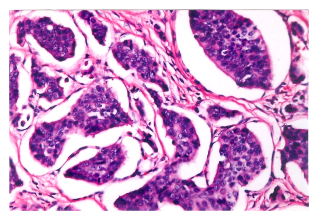

113 年第 2 次醫師醫學（二）（包括微生物免疫學、寄生蟲學、藥理學、病理學、公共衛生學等科目知識及其臨床之應用）試題與答案
這一頁是民國 113 年第 2 次醫師醫學（二）（包括微生物免疫學、寄生蟲學、藥理學、病理學、公共衛生學等科目知識及其臨床之應用）的整份歷屆試題，共 100 題，題目與標準答案出自考選部「國家考試試題及測驗式試題答案」開放資料，其中 100 題附有詳解。以下逐題列出題幹、選項與答案；要計時作答或記錄成績，請用線上練習。
考選部原始場次代碼：113090
線上作答這一科 →
全部 100 題
第 1 題
一般使用結核菌素試驗（tuberculin skin test）測試是否感染結核桿菌，當無法區分是感染者或施打bacillus Calmette-Guérin（BCG）疫苗後的反應，通常會加做下列何種測試以進一步確認？
- （A）反轉錄聚合酶鏈鎖反應（reverse transcriptase-PCR）
- （B）丙型干擾素釋放試驗（IFN-γ release assays）
- （C）北方點墨法（northern blotting）
- （D）腫瘤壞死因子釋放試驗（TNF-α release assays）
答案：（B）
詳解與考點
正解：結核菌素試驗無法區分真正結核感染與 BCG 接種後反應。丙型干擾素釋放試驗（IFN-γ release assays, IGRA）以結核分枝桿菌特異性抗原刺激 T 細胞，偵測其 IFN-γ 反應，所用抗原通常不在 BCG 菌株中表現，因此較能避免 BCG 造成的偽陽性，故選 B。
A：反轉錄聚合酶鏈鎖反應（reverse transcriptase-PCR）用於偵測 RNA 並先反轉錄成 DNA，不是區分 BCG 接種反應與潛伏結核感染的標準免疫檢測。
C：北方點墨法（northern blotting）用於分析 RNA，並非臨床上確認結核感染的常規檢驗。
D：腫瘤壞死因子釋放試驗（TNF-α release assays）不是用於此鑑別的標準檢測；關鍵是對結核菌特異性抗原的 IFN-γ 反應。
本題考點：結核菌素試驗（tuberculin skin test）會受 BCG 接種影響；丙型干擾素釋放試驗（IFN-γ release assays）可提高結核感染免疫診斷的特異性；潛伏結核感染（latent tuberculosis infection）須結合臨床風險判讀。
第 2 題
經何種細菌汙染的蜂蜜，嬰兒誤食後，最有可能因細菌產生的毒素，導致乏力性麻痺甚至呼吸困難？
- （A）艱難梭菌（Clostridium difficile）
- （B）破傷風梭菌（Clostridium tetani）
- （C）肉毒桿菌（Clostridium botulinum）
- （D）產氣莢膜梭菌（Clostridium perfringens）
答案：（C）
詳解與考點
正解：嬰兒誤食蜂蜜後的乏力性麻痺與呼吸困難。肉毒桿菌（Clostridium botulinum）的芽孢可在嬰兒腸道定殖並產生肉毒毒素，毒素阻斷神經肌肉接頭乙醯膽鹼釋放，造成下降性、鬆弛性麻痺，故選 C。
A：艱難梭菌（Clostridium difficile）主要以毒素造成抗生素相關腹瀉與偽膜性腸炎，不是蜂蜜相關的嬰兒鬆弛性麻痺病原。
B：破傷風梭菌（Clostridium tetani）毒素抑制抑制性神經傳遞，表現為肌肉僵直與痙攣，和本題乏力性麻痺方向相反。
D：產氣莢膜梭菌（Clostridium perfringens）可引起食物中毒、氣性壞疽或肌炎，並非嬰兒蜂蜜暴露後肉毒中毒的典型病原。
本題考點：嬰兒肉毒中毒（infant botulism）常與攝入肉毒桿菌芽孢有關；肉毒毒素（botulinum toxin）抑制乙醯膽鹼釋放；鬆弛性麻痺（flaccid paralysis）須與破傷風的痙攣性麻痺區分。
第 3 題
青黴素結合蛋白質（Penicillin-binding proteins）的突變，最不可能造成細菌對下列何類藥物出現抗藥性？
- （A）頭芽孢菌素（cephalosporins）
- （B）碳青黴烯（carbapenems）
- （C）單酰胺菌素（monobactams）
- （D）磺胺類藥物（sulfonamides）
答案：（D）
詳解與考點
正解：青黴素結合蛋白質（penicillin-binding proteins, PBP）突變所造成的抗藥性範圍。PBP 是 β-內醯胺類藥物的作用標的，因此其構型改變會降低 β-內醯胺的結合；磺胺類藥物則抑制葉酸合成路徑，靶點不是 PBP，最不可能因 PBP 突變而抗藥，故選 D。
A：頭芽孢菌素（cephalosporins）屬 β-內醯胺類，需與 PBP 結合以抑制細胞壁交聯，PBP 改變可造成抗藥性。
B：碳青黴烯（carbapenems）也是 β-內醯胺類，雖抗藥性還可能涉及碳青黴烯酶或通透性下降，PBP 改變仍可降低其作用。
C：單酰胺菌素（monobactams）同樣以 PBP 為主要作用靶點，PBP 改變可影響藥物與靶點的結合。
本題考點：青黴素結合蛋白質（penicillin-binding proteins）是 β-內醯胺類（β-lactams）的作用靶點；標的改變（target modification）可導致 β-內醯胺抗藥性；磺胺類（sulfonamides）抑制葉酸代謝而非細胞壁合成。
第 4 題
關於退伍軍人菌屬（Legionella）感染的敘述，下列何者最不適當？
- （A）BCYE agar常用於培養退伍軍人菌屬
- （B）退伍軍人菌屬為革蘭氏陽性桿菌
- （C）好發於夏末至秋天，天氣溫暖的季節
- （D）可造成龐提亞克熱（Pontiac fever）
答案：（B）
詳解與考點
正解：退伍軍人菌屬（Legionella）的染色與菌種特性。它是革蘭氏陰性桿菌，且一般革蘭氏染色不易清楚顯示；把它說成革蘭氏陽性桿菌是基本分類錯誤，故最不適當的是 B。
A：退伍軍人菌屬培養常使用 BCYE agar（buffered charcoal yeast extract agar），以提供其生長所需的特殊營養條件，敘述適當。
C：退伍軍人病與溫暖季節及水系統相關暴露較常見，夏末至秋季的流行病學描述合理。
D：退伍軍人菌可造成肺炎型的退伍軍人病，也可造成較輕微、自限性的龐提亞克熱（Pontiac fever），敘述適當。
本題考點：退伍軍人菌（Legionella）為革蘭氏陰性桿菌；BCYE agar 是重要培養基；退伍軍人病（Legionnaires’ disease）與龐提亞克熱（Pontiac fever）是不同臨床表現。
第 5 題
下列何種細菌毒素經短暫100℃加熱後較易失去活性？
- （A）大腸桿菌（E. coli）內毒素（endotoxin）
- （B）金黃色葡萄球菌（Staphylococcus aureus）毒性休克症候群毒素-1（Toxic Shock Syndrome Toxin-1）
- （C）破傷風梭狀芽孢桿菌（Clostridium tetani）破傷風痙攣毒素（tetanospasmin）
- （D）腦膜炎雙球菌（Neisseria meningitidis）脂寡糖（lipooligosaccharide）
答案：（C）
詳解與考點
正解：短暫 100℃ 加熱後是否失活，關鍵在毒素的耐熱性。C 的破傷風痙攣毒素（tetanospasmin）為熱不穩定神經外毒素，短暫 100℃ 加熱較易失活；因此相對耐熱的內毒素而言，答案為 C。
A：大腸桿菌內毒素（endotoxin）為脂多醣（lipopolysaccharide）成分，耐熱性較蛋白質外毒素高，短暫加熱不易使其失活。
B：毒性休克症候群毒素-1（Toxic Shock Syndrome Toxin-1, TSST-1）雖為蛋白質超抗原，卻具特殊耐熱性，故不是短暫 100℃ 加熱後較易失活者。
D：腦膜炎雙球菌脂寡糖（lipooligosaccharide）屬內毒素性質，結構核心含脂質成分，耐熱性高於破傷風痙攣毒素。
本題考點：外毒素（exotoxin）多為蛋白質，通常較易受熱變性；內毒素（endotoxin）是革蘭氏陰性菌外膜的脂多醣或脂寡糖；破傷風痙攣毒素（tetanospasmin）屬神經外毒素。
第 6 題
下列有關細菌結構及其於致病過程中所扮演角色，何者敘述最不適當？
- （A）鞭毛（flagellum）為細菌運動相關構造
- （B）莢膜（capsule）與細菌抵禦吞噬作用有關
- （C）細菌生物膜（biofilm）結構可協助細菌黏附於組織或醫用器材
- （D）纖毛（fimbriae）是比鞭毛（flagellum）直徑更大的毛髮狀結構，並與細菌之黏附（adhesion）能力有關
答案：（D）
詳解與考點
正解：纖毛（fimbriae）與鞭毛（flagellum）的構造大小及功能比較。纖毛通常較短、較細、數量較多，主要協助黏附；鞭毛則較長且直徑較大，主要負責運動。D 將兩者的直徑關係顛倒，故最不適當。
A：鞭毛（flagellum）藉由旋轉推動細菌移動，是與細菌運動相關的構造，敘述適當。
B：莢膜（capsule）可抑制調理作用及吞噬，增進細菌逃避免疫清除的能力，敘述適當。
C：生物膜（biofilm）由細菌及胞外基質組成，可協助黏附於組織或醫療器材並增加持續感染風險，敘述適當。
本題考點：纖毛（fimbriae）主要媒介黏附（adhesion）；鞭毛（flagellum）主要負責運動（motility）且構造較粗大；生物膜（biofilm）促進器材相關感染與細菌持續定殖。
第 7 題
肺纖維性囊腫病人的痰中常有綠膿桿菌（Pseudomonas aeruginosa），下列那個毒力因子最能幫助此菌在宿主形成聚落（colonization）？
- （A）絲氨酸蛋白酶（serine protease）
- （B）海藻酸鹽（alginate）
- （C）綠膿桿菌素（pyocyanin）
- （D）鋅金屬基質蛋白酶（zinc metalloprotease）
答案：（B）
詳解與考點
正解：肺纖維性囊腫患者中綠膿桿菌的「形成聚落」。海藻酸鹽（alginate）是黏液型綠膿桿菌的重要胞外多醣，可形成生物膜、黏附並抵抗宿主清除，因此最有助於在呼吸道長期定殖，故選 B。
A：絲氨酸蛋白酶（serine protease）可破壞宿主蛋白質並造成組織傷害，但不是綠膿桿菌在纖維性囊腫呼吸道形成黏液型聚落的核心因子。
C：綠膿桿菌素（pyocyanin）能產生活性氧化壓力並傷害宿主細胞，是毒性因子；它看似能增加致病性，卻不如海藻酸鹽直接說明持續黏附與生物膜定殖。
D：鋅金屬基質蛋白酶（zinc metalloprotease）與組織破壞及免疫逃脫有關，並非此情境下最關鍵的聚落形成機制。
本題考點：海藻酸鹽（alginate）是黏液型綠膿桿菌的重要胞外多醣；生物膜（biofilm）促進慢性定殖與抗清除；肺纖維性囊腫（cystic fibrosis）常有綠膿桿菌慢性呼吸道感染。
第 8 題
有關化膿性鏈球菌（Streptococcus pyogenes）毒力因子（virulence factors）的敘述，下列何者最不適當？
- （A）M蛋白質（M protein）可協助此菌躲避吞噬作用（phagocytosis）
- （B）猩紅熱（scarlet fever）會出現皮膚紅疹（rash），主要是因為鏈球菌激酶（streptokinase）所導致
- （C）鏈球菌溶血素O（Streptolysin O）具抗原性，且易被氧破壞
- （D）去氧核糖核酸酶（deoxyribonuclease, DNase）可助長細菌在宿主組織內散播
答案：（B）
詳解與考點
正解：猩紅熱紅疹的毒素來源。化膿性鏈球菌的猩紅熱主要由鏈球菌致熱外毒素（streptococcal pyrogenic exotoxin）所致，並非鏈球菌激酶（streptokinase）；B 將散播因子誤作致疹毒素，故最不適當。
A：M 蛋白質（M protein）可抑制調理作用與吞噬，是化膿性鏈球菌逃避免疫的重要毒力因子，敘述適當。
C：鏈球菌溶血素 O（Streptolysin O）具有抗原性且對氧敏感，臨床可利用抗鏈球菌溶血素 O 抗體反應作為近期感染的輔助線索，敘述適當。
D：去氧核糖核酸酶（deoxyribonuclease, DNase）可分解含 DNA 的膿液與組織物質，協助細菌在宿主組織中散播，敘述適當。
本題考點：鏈球菌致熱外毒素（streptococcal pyrogenic exotoxin）引起猩紅熱（scarlet fever）紅疹；鏈球菌激酶（streptokinase）促進纖維蛋白溶解與散播；M 蛋白質（M protein）具有抗吞噬作用。
第 9 題
有關甲硝唑（metronidazole）之敘述，下列何者最適當？
- （A）可有效治療霍亂
- （B）進入菌體內直接造成毒性
- （C）可治療鬆脆類桿菌（Bacteroides fragilis）感染症
- （D）對好氧菌很有效
答案：（C）
詳解與考點
正解：甲硝唑（metronidazole）的抗菌譜與活化條件。它在厭氧環境中經微生物還原而生成可傷害 DNA 的活性中間產物，對厭氧菌有效；鬆脆類桿菌（Bacteroides fragilis）是重要厭氧菌，故選 C。
A：霍亂弧菌是好氧或兼性厭氧菌，霍亂治療的核心是補液，甲硝唑不是其典型有效治療藥物。
B：甲硝唑進入菌體後必須先被還原活化才形成毒性產物，並非一進入菌體便直接造成毒性。
D：好氧菌因氧氣會阻礙藥物還原活化，對甲硝唑通常不敏感；此選項把厭氧偏好的條件說反。
本題考點：甲硝唑（metronidazole）需經還原活化後造成 DNA 損傷；厭氧菌（anaerobes）與部分原蟲是主要作用範圍；鬆脆類桿菌（Bacteroides fragilis）是重要臨床厭氧菌。
第 10 題
病毒感染時最常利用下列何種蛋白質進入細胞內？
- （A）基質蛋白（matrix protein）
- （B）蛋白水解酶（protease）
- （C）醣蛋白（glycoprotein）
- （D）核心蛋白（core protein）
答案：（C）
詳解與考點
正解：病毒「進入細胞」時與宿主受體結合的表面分子。病毒醣蛋白（glycoprotein）常位於病毒套膜或衣殼表面，可辨識宿主細胞受體並促進附著與融合或內吞，因此最常被用於進入細胞，故選 C。
A：基質蛋白（matrix protein）通常位於病毒套膜內側，主要參與病毒組裝、穩定與出芽，不是直接辨識細胞受體的主要分子。
B：蛋白水解酶（protease）常參與病毒多蛋白前驅物的切割與成熟，作用重點不是細胞表面附著。
D：核心蛋白（core protein）多負責包裹或組織病毒基因體，位置通常不利於第一步與宿主受體接觸。
本題考點：病毒附著（viral attachment）由病毒表面蛋白與宿主受體互動；病毒醣蛋白（glycoprotein）常介導受體辨識與膜融合；病毒成熟（viral maturation）則常需要蛋白水解酶（protease）。
第 11 題
下列何種病毒感染人類引發疾病後，比較不會直接造成細胞增生形成腫瘤？
- （A）B型肝炎病毒（HBV）
- （B）人類嗜淋巴球病毒一型（HTLV-1）
- （C）人類乳突瘤病毒（HPV）
- （D）人類免疫缺陷病毒（HIV）
答案：（D）
詳解與考點
正解：「直接造成細胞增生形成腫瘤」。HIV 主要破壞 CD4 T 細胞並造成免疫缺乏，相關惡性腫瘤多因免疫抑制、慢性刺激或合併致癌病毒而增加，不是 HIV 直接驅動細胞增生，故選 D。
A：B 型肝炎病毒（HBV）與肝細胞癌有關，可透過慢性肝炎、肝硬化及病毒基因相關機轉促進肝癌發生。
B：人類嗜淋巴球病毒一型（HTLV-1）可直接轉化 T 細胞，與成人 T 細胞白血病／淋巴瘤密切相關。
C：人類乳突瘤病毒（HPV）高危險型病毒蛋白可干擾細胞週期調控，直接參與子宮頸癌及其他上皮惡性腫瘤的形成。
本題考點：直接致癌病毒（directly oncogenic viruses）可改變細胞週期或促進細胞轉化；HIV（human immunodeficiency virus）主要造成免疫缺乏；免疫缺乏相關腫瘤（immunodeficiency-associated malignancy）不等於病毒直接致癌。
第 12 題
郵輪上的一群人出現了上吐下瀉的症狀，未經治療，症狀在2～3天都獲得緩解。他們最可能感染了下列何種病毒？
- （A）腺病毒40型（Adenovirus 40）
- （B）諾羅病毒（Norovirus）
- （C）輪狀病毒（Rotavirus group A）
- （D）腸病毒D68（Enterovirus D68）
答案：（B）
詳解與考點
正解：郵輪群聚、急性上吐下瀉及未治療 2～3 天緩解。諾羅病毒（Norovirus）傳染力高，常造成密閉群體中的急性腸胃炎爆發，病程多為自限性且持續數日，最符合此情境，故選 B。
A：腺病毒 40 型（Adenovirus 40）可引起腸胃炎，但郵輪上成人群聚且快速爆發、自限數日的經典情境較不如諾羅病毒。
C：A 型輪狀病毒（Rotavirus group A）較常造成嬰幼兒嚴重腹瀉，雖能群聚流行，卻不是本題郵輪急性腸胃炎最典型的病原。
D：腸病毒 D68（Enterovirus D68）主要與呼吸道疾病及少數神經學併發症相關，不能解釋以嘔吐腹瀉為主的郵輪群聚。
本題考點：諾羅病毒（Norovirus）是急性病毒性腸胃炎的重要病原；群聚感染（outbreak）常見於郵輪、機構等密閉環境；自限性腸胃炎（self-limited gastroenteritis）仍須注意脫水風險。
第 13 題
下列臨床症狀，何者與麻疹病毒感染較無關？
- （A）腦炎（encephalitis）
- （B）畏光（photophobia）
- （C）口腔出現科氏斑點（Koplik spots）
- （D）進行性多灶性白質腦病（Progressive multifocal leukoencephalopathy, PML）
答案：（D）
詳解與考點
正解：麻疹病毒感染「較無關」的症狀。進行性多灶性白質腦病（progressive multifocal leukoencephalopathy, PML）是 John Cunningham virus 在嚴重免疫抑制者再活化所致的白質病變，並非麻疹的典型臨床表現，故選 D。
A：腦炎（encephalitis）可為麻疹感染的神經學併發症，雖不常見但與麻疹有關。
B：畏光（photophobia）可隨麻疹前驅期的結膜炎出現，是典型的呼吸道與眼部症狀組合之一。
C：口腔科氏斑點（Koplik spots）是麻疹出疹前的重要口腔黏膜特徵，具有高度提示性。
本題考點：麻疹（measles）常見咳嗽、鼻炎、結膜炎與科氏斑點（Koplik spots）；麻疹腦炎（measles encephalitis）是重要併發症；進行性多灶性白質腦病（PML）主要與 John Cunningham virus 相關。
第 14 題
有關人類中東呼吸症候群（MERS）病毒，下列敘述何者最適當？
- （A）被感染的病人會產生出血及休克之病徵
- （B）遺傳基因為正股(+)RNA
- （C）主要是以果子狸為中間宿主而傳播
- （D）喜歡在室溫25℃複製生長
答案：（B）
詳解與考點
正解：MERS 病毒的基因體型態。中東呼吸症候群冠狀病毒（Middle East respiratory syndrome coronavirus, MERS-CoV）屬冠狀病毒科，基因體為正股單股 RNA（positive-sense single-stranded RNA），可直接作為轉譯模板，故選 B。
A：出血與休克較符合某些出血熱病毒感染的臨床印象；MERS 主要造成嚴重呼吸道疾病，不能以此作為典型敘述。
C：MERS 的重要動物宿主與傳播脈絡是駱駝，果子狸較常與 SARS 冠狀病毒的早期流行病學討論連結，故此項錯置。
D：人體呼吸道病毒的複製適溫需配合宿主生理環境，將其說成偏好室溫 25℃ 複製生長不適當。
本題考點：MERS-CoV（Middle East respiratory syndrome coronavirus）是正股 RNA 病毒（positive-sense RNA virus）；冠狀病毒（coronavirus）主要感染呼吸道；人畜共通傳播（zoonotic transmission）中駱駝是 MERS 的重要宿主線索。
第 15 題
有關人類免疫缺陷病毒（HIV）的敘述，下列何者最不適當？
- （A）病毒之蛋白酶（protease）主要作用於宿主細胞蛋白質
- （B）病毒Rev蛋白質可調控病毒mRNA轉送至細胞質
- （C）病毒Tat蛋白質為一極強的轉活化因子（transactivator）
- （D）在複製的早期會產生多種剪接（spliced）的mRNA
答案：（A）
詳解與考點
正解：HIV 蛋白酶（protease）的作用受質。HIV 蛋白酶在病毒成熟時切割 HIV 的 Gag 與 Gag-Pol 多蛋白前驅物，產生具感染力病毒所需的結構與酵素蛋白；它主要作用於病毒蛋白而非宿主細胞蛋白質，因此 A 最不適當。
B：Rev 蛋白質可辨識病毒 RNA 的特定序列並促進未完全剪接或單次剪接 HIV mRNA 輸出細胞核至細胞質，敘述適當。
C：Tat 蛋白質是強效轉活化因子（transactivator），可增強 HIV 基因轉錄延伸，敘述適當。
D：HIV 在複製早期會產生多種剪接（spliced）的 mRNA，以表現調控性蛋白質；隨後才增加未剪接與部分剪接 RNA 的利用，敘述適當。
本題考點：HIV 蛋白酶（HIV protease）切割病毒多蛋白前驅物並參與病毒成熟（viral maturation）；Rev 蛋白質（Rev protein）調控 HIV RNA 核外輸出；Tat 蛋白質（Tat protein）促進病毒轉錄（viral transcription）。
第 16 題
下列何種念珠菌對 fluconazole 最具有先天的抗藥性？
- （A）Candida albicans
- （B）Candida tropicalis
- （C）Candida krusei
- （D）Candida parapsilosis
答案：（C）
詳解與考點
正解：fluconazole 的「先天抗藥性」。Candida krusei 對 fluconazole 具有內在抗性，臨床上不應將 fluconazole 視為其可靠治療選擇，故選 C。
A：Candida albicans 常可對 fluconazole 敏感；雖可在治療壓力下產生後天抗藥性，但不是典型的先天抗性菌種。
B：Candida tropicalis 的藥物敏感性可能隨菌株與地區而變，不能等同於對 fluconazole 具穩定的內在抗性。
D：Candida parapsilosis 的重要藥敏議題較常是對 echinocandin 的較高最低抑菌濃度；這看似也是治療棘手的念珠菌，卻不是 fluconazole 先天抗性的典型答案。
本題考點：念珠菌抗黴菌藥敏感性（Candida antifungal susceptibility）——Candida krusei 對 fluconazole 具內在抗性；內在抗性（intrinsic resistance）須與治療後出現的後天抗性區分。
第 17 題
造成全身感染之真菌中，下列何者會在感染組織中較常形成酵母團（spherule）？
- （A）莢膜組織胞漿菌（Histoplasma capsulatum）
- （B）皮炎芽生黴菌（Blastomyces dermatitidis）
- （C）巴西副球黴菌（Paracoccidioides brasiliensis）
- （D）粗球黴菌（Coccidioides immitis）
答案：（D）
詳解與考點
正解：感染組織內形成酵母團（spherule）。粗球黴菌 Coccidioides immitis 在組織中形成大型厚壁 spherule，內含許多內生孢子（endospore），破裂後可釋出內生孢子，是其典型組織型態，故選 D。
A：莢膜組織胞漿菌在組織內主要呈小型酵母菌，常位於巨噬細胞內，並不形成 spherule。
B：皮炎芽生黴菌在組織中呈寬基底出芽（broad-based budding）的酵母菌；酵母型態看似相近，但形態特徵不是 spherule。
C：巴西副球黴菌在組織中可見多重出芽、類似船舵輪的酵母菌，與粗球黴菌的厚壁 spherule 不同。
本題考點：地方性雙型真菌（endemic dimorphic fungi）——Coccidioides 在組織中形成 spherule 與內生孢子；Histoplasma 為細胞內小酵母菌，Blastomyces 為寬基底出芽。
第 18 題
人類的免疫系統由造血幹細胞分化而來，若有一病人缺乏了淋巴前驅細胞（common lymphoidprogenitor），你預測此病人體內那一個部分的免疫系統會受到最大的影響？
- （A）先天性免疫系統
- （B）後天性免疫系統
- （C）先天性以及後天性免疫系統同時受到相同程度的影響
- （D）血液凝結系統
答案：（B）
詳解與考點
正解：缺乏共同淋巴前驅細胞（common lymphoid progenitor）。此細胞是 B 細胞、T 細胞與自然殺手細胞等淋巴球系統的前驅，因此最主要受損的是由 B、T 細胞主導的後天性免疫系統，故選 B。
A：先天性免疫的主要吞噬細胞與多數粒細胞來自共同髓系前驅細胞，並非共同淋巴前驅細胞的主要產物。
C：自然殺手細胞雖屬先天免疫且源自淋巴前驅細胞，但先天免疫的髓系成分不會同程度缺失；這個選項看似顧及 NK 細胞，卻忽略先天免疫的多數效應細胞來源。
D：血液凝結主要涉及血小板與凝血因子，並非淋巴前驅細胞分化形成的免疫支系。
本題考點：造血分化（hematopoiesis）——共同淋巴前驅細胞產生 B 細胞、T 細胞與 NK 細胞；共同髓系前驅細胞則產生單核球、嗜中性球等髓系細胞。
第 19 題
有關補體系統參與先天性免疫防禦之敘述，下列何者最不適當？
- （A）補體分子C5活化下游C6-C9組成膜攻擊複合體（membrane-attack complex）裂解病原菌
- （B）補體活化僅能由抗體啟動而非病原菌表面分子
- （C）活化補體分子可以經由調理作用（opsonization）促進吞噬反應
- （D）活化補體分子C3a及C5a可以活化肥大細胞（mast cells）促進發炎反應
答案：（B）
詳解與考點
正解：題目問「最不適當」，關鍵是將補體活化限縮為只能由抗體啟動。補體除可經抗體參與的古典途徑（classical pathway）活化，也可由病原表面直接啟動替代途徑（alternative pathway），並可經凝集素途徑（lectin pathway）活化，因此 B 錯誤，故選 B。
A：C5 被切割後產生的 C5b 可依序招募 C6 至 C9，組成膜攻擊複合體（membrane-attack complex, MAC）並造成部分病原體細胞膜破壞，敘述適當。
C：C3b 等活化補體片段可沉積於病原表面，作為調理素（opsonin）增進吞噬細胞辨識與吞噬，敘述適當。
D：C3a 與 C5a 為過敏毒素（anaphylatoxins），可促進肥大細胞活化與發炎反應，敘述適當。
本題考點：補體活化途徑（complement activation pathways）——古典、替代與凝集素途徑皆可啟動補體；C3b 負責調理作用，C5b-9 形成 MAC，C3a、C5a 促進發炎。
第 20 題
關於T細胞所辨識的抗原，下列敘述何者最不適當？
- （A）T細胞所辨識的抗原，通常是短片段的胜肽
- （B）抗原需被呈獻在MHC上，才能被T細胞所辨識
- （C）抗原需摺疊成複雜的立體結構，才能被T細胞所辨識
- （D）T細胞經胸腺教育的階段，可區隔自體與外來抗原，以避免產生自體免疫反應
答案：（C）
詳解與考點
正解：題目問「最不適當」，關鍵是 T 細胞受體辨識的抗原形式。T 細胞受體辨識的是抗原處理後、由 MHC 呈獻的線性短胜肽，而非必須保留完整蛋白質的複雜立體構形；要求抗原摺疊成複雜結構是 B 細胞受體或抗體辨識天然抗原的特徵，故選 C。
A：傳統 αβ T 細胞通常辨識由 MHC 溝槽呈現的短胜肽，敘述適當。
B：傳統 αβ T 細胞的辨識具有 MHC 限制性（MHC restriction），抗原胜肽須與 MHC 共同被辨識，敘述適當。
D：胸腺內的正選擇與負選擇建立中樞耐受（central tolerance），有助移除強烈辨識自體抗原的 T 細胞，敘述適當。
本題考點：T 細胞抗原辨識（T-cell antigen recognition）——TCR 辨識 peptide-MHC 複合體；BCR／抗體則可辨識天然抗原的構形表位（conformational epitope）。
第 21 題
下列關於B細胞發育的敘述，何者最不適當？
- （A）免疫球蛋白基因的V(D)J重組，先從重鏈（heavy chain）開始
- （B）μ重鏈（μ heavy chain）與VpreB及λ5組成的pre-BCR，對pre-B細胞繼續發育是必要的
- （C）Bruton's tyrosine kinase（Btk）是pre-BCR或BCR下游訊息傳遞的必要蛋白，缺乏Btk會造成X-linkedagammaglobulinemia（XLA）
- （D）表現IgM的immature B細胞如果辨識到抗原，就會開始細胞分裂（clonal expansion）
答案：（D）
詳解與考點
正解：題目問「最不適當」，關鍵是 immature B 細胞在骨髓遇到抗原後的命運。未成熟 B 細胞若強烈辨識自體抗原，主要會接受負向選擇，例如受體編輯（receptor editing）、無反應或凋亡，而不是立即進行克隆擴增，故選 D。
A：免疫球蛋白基因重組先進行重鏈 V(D)J 重組，之後才進行輕鏈重組，敘述適當。
B：成功表現 μ 重鏈並與 VpreB、λ5 組成 pre-BCR，是 pre-B 細胞存活與繼續成熟的重要檢查點，敘述適當。
C：Btk 是 pre-BCR 與 BCR 訊號傳遞的重要分子，缺乏時可造成 X-linked agammaglobulinemia（XLA），敘述適當。
本題考點：B 細胞發育與耐受（B-cell development and tolerance）——重鏈重組先於輕鏈；pre-BCR 是發育檢查點；未成熟 B 細胞辨識自體抗原時啟動負向選擇而非克隆擴增。
第 22 題
下列何種CD4效應T細胞（effector CD4 T cells）所分泌的細胞激素（cytokines）或產生的表面分子（surface molecule）與促進B細胞抗體類型轉換（isotype class switch）的作用相關性最高？
- （A）IL-2
- （B）IL-10
- （C）CD40 ligand
- （D）CD28
答案：（C）
詳解與考點
正解：B 細胞抗體類型轉換（isotype class switch）所需的 T 細胞協助。活化 CD4 T 細胞表面的 CD40 ligand 與 B 細胞 CD40 結合，是 T 細胞依賴性類型轉換不可或缺的共刺激訊號，故選 C。
A：IL-2 主要促進 T 細胞增殖與活化，並非驅動 B 細胞類型轉換的關鍵接觸訊號。
B：IL-10 可調節免疫反應並影響部分 B 細胞功能，但無法取代 CD40 ligand-CD40 的必要交互作用。
D：CD28 是 T 細胞上的共刺激受體，主要與抗原呈獻細胞的 B7 結合以活化 T 細胞；它看似也是共刺激分子，卻不是 T 細胞直接提供給 B 細胞的類型轉換訊號。
本題考點：T 細胞依賴性 B 細胞活化（T-cell-dependent B-cell activation）——CD40 ligand-CD40 促進類型轉換（class-switch recombination）與生發中心反應；細胞激素再影響轉換的抗體類別。
第 23 題
下列有關肺炎鏈球菌多醣體疫苗之敘述，何者最不適當？
- （A）是多醣體連結蛋白質形成的疫苗
- （B）以thymus-independent方式活化B細胞
- （C）誘發出來的抗多醣體抗體可降低病菌感染
- （D）可誘發記憶B細胞的產生
答案：（B）
詳解與考點
正解：題幹的（A）「多醣體連結蛋白質」描述結合型肺炎鏈球菌疫苗。莢膜多醣體接上載體蛋白後，B 細胞可取得 T 細胞協助，形成 thymus-dependent 反應並產生記憶 B 細胞；因此（B）所稱 thymus-independent 活化不適當，故選 B。
A：結合型疫苗的設計正是將莢膜多醣體連結載體蛋白，使原本對 T 細胞協助反應較弱的多醣體抗原能引發較佳免疫反應，敘述適當。
C：結合型疫苗可誘發抗莢膜多醣體抗體，降低肺炎鏈球菌感染風險，敘述適當。
D：因有載體蛋白提供 T 細胞協助，結合型疫苗可誘發記憶 B 細胞，敘述適當。
本題考點：結合型疫苗（conjugate vaccine）將多醣體接上蛋白質載體；T 細胞依賴性反應（thymus-dependent response）可形成記憶 B 細胞；純多醣體疫苗（polysaccharide vaccine）則以 T 細胞非依賴性反應為主。
第 24 題
疫苗接種（vaccination）是公共衛生常用以預防傳染病的手段。下列何者最不適合用於先天性免疫不全的病人？
- （A）B型肝炎（hepatitis B）疫苗
- （B）沙賓（Sabin）小兒麻痺疫苗
- （C）白喉、破傷風、百日咳三合一（DPT）疫苗
- （D）注射型流行性感冒（influenza）疫苗
答案：（B）
詳解與考點
正解：先天性免疫不全者最不適合接種的疫苗。Sabin 小兒麻痺疫苗是口服活性減毒疫苗（live attenuated vaccine），在免疫功能缺陷者可能複製並造成疫苗相關疾病，因此最不適合，故選 B。
A：B 型肝炎疫苗為重組次單位疫苗，非活性疫苗，一般不會因疫苗本身複製而造成感染。
C：白喉、破傷風、百日咳三合一疫苗含類毒素與非活性抗原成分，並非活性減毒疫苗；免疫不全者的保護效果可能較差，但安全性考量不同於活疫苗。
D：注射型流行性感冒疫苗為非活性疫苗，通常可用於免疫不全者；易被混淆的是鼻噴型流感疫苗才屬活性減毒疫苗。
本題考點：疫苗種類（vaccine types）——活性減毒疫苗可在宿主內複製，免疫不全者須避免或審慎評估；重組、類毒素與注射型非活性疫苗不具此複製風險。
第 25 題
免疫性血小板缺乏症（immune thrombocytopenia）最主要是由下列何種過敏反應（hypersensitivity）所導致？
- （A）type I過敏反應
- （B）type II過敏反應
- （C）type III過敏反應
- （D）type IV過敏反應
答案：（B）
詳解與考點
正解：免疫性血小板缺乏症中抗血小板自體抗體造成血小板破壞。抗體直接結合細胞表面抗原，並促進脾臟巨噬細胞清除血小板，屬抗體媒介的細胞毒性反應（type II hypersensitivity），故選 B。
A：type I 過敏反應由 IgE 與肥大細胞即時釋放介質主導，典型為過敏性鼻炎或蕁麻疹，並非抗血小板抗體清除血小板。
C：type III 過敏反應的核心是可溶性免疫複合體沉積於組織並引發發炎，不是抗體直接標記血小板表面。
D：type IV 過敏反應主要由 T 細胞介導，常屬延遲型反應，與本題的自體抗體機轉不同。
本題考點：過敏反應分類（hypersensitivity reactions）——type II 是 IgG 或 IgM 對細胞表面或基質抗原的抗體媒介傷害；免疫性血小板缺乏症是其典型例子。
第 26 題
自體免疫疾病是由於免疫系統針對自體抗原產生一系列免疫反應而產生的疾病。自體免疫疾病的形成，必須突破多重免疫耐受的機制。下列有關自體免疫的敘述，何者最不適當？
- （A）免疫豁免部位，例如眼、子宮等器官，若遭受創傷導致組織特異抗原得以被周邊免疫細胞偵測時，可能引發自體免疫疾病
- （B）調節型T細胞（regulatory T cell）主要以細胞毒殺的方式，移除其辨識的自體細胞
- （C）周邊免疫失能（peripheral anergy）指的是當免疫細胞在周邊組織接收到抗原刺激時，若沒有受到共同刺激（costimulation）的訊號，則會產生免疫抑制
- （D）中樞免疫耐受性的建立，主要在初級免疫器官骨髓以及胸腺中進行
答案：（B）
詳解與考點
正解：題目問「最不適當」，關鍵是調節型 T 細胞（regulatory T cell, Treg）的抑制方式。Treg 主要藉由抑制性細胞激素、抑制共刺激及消耗局部生長訊號等方式維持免疫耐受，並非以細胞毒殺方式移除自體細胞，故選 B。
A：原本與免疫系統隔離的組織抗原在創傷後暴露，可使周邊淋巴球接觸而有引發自體免疫的可能，敘述適當。
C：周邊 T 細胞僅接收抗原訊號、未獲共刺激時，可能進入無反應狀態（anergy），是周邊耐受的重要機制，敘述適當。
D：中樞耐受主要在胸腺與骨髓等初級淋巴器官建立，分別篩選 T 細胞與 B 細胞，敘述適當。
本題考點：自體免疫耐受（self-tolerance）——中樞耐受在胸腺與骨髓形成；周邊耐受包括無反應（anergy）、調節型 T 細胞抑制與免疫豁免部位抗原隔離。
第 27 題
目前有許多癌症治療是透過給與免疫細胞或激活免疫系統而達成，關於癌症免疫治療，下列敘述何者最不適當？
- （A）mRNA癌症疫苗需先找到腫瘤的基因突變，根據病人的HLA預測新生抗原（neoantigen），再根據預測結果合成mRNA，透過脂質奈米粒包覆mRNA，注射疫苗後激活腫瘤特異性細胞的免疫反應
- （B）細胞激素激活殺手細胞（cytokine-induced killer, CIK），是將T細胞在含有多種促發炎細胞激素（pro-inflammatory cytokines）的環境下，進行體外培養，再回輸至病患體內，此種細胞，具有高度腫瘤特異性
- （C）單核球衍生樹突細胞（monocyte-derived dendritic cell, MoDC）透過體外培養，將單核球轉變成抗原呈獻細胞，此種細胞會捕捉體內腫瘤抗原，並刺激與活化腫瘤特異性T細胞，以達到腫瘤毒殺作用
- （D）嵌合抗原受體T細胞（chimeric antigen receptor-T, CAR-T），是透過病毒將CAR分子基因送入T細胞，此CAR分子具有辨認腫瘤抗原與活化T細胞的特性
答案：（B）
詳解與考點
正解：題目問「最不適當」，關鍵是 CIK 細胞是否具有高度腫瘤特異性。細胞激素激活殺手細胞（cytokine-induced killer, CIK）經體外細胞激素刺激後具有殺傷腫瘤活性，但其辨識並非如 CAR-T 般由特定受體賦予高度腫瘤抗原專一性；稱其「具有高度腫瘤特異性」過度延伸，故選 B。
A：個人化 mRNA 癌症疫苗可依腫瘤突變與 HLA 預測候選新生抗原，再以 mRNA 形式遞送以誘發免疫反應，敘述符合其基本策略。
C：MoDC 可由單核球體外誘導為樹突細胞，經載入或取得腫瘤抗原後呈獻給 T 細胞；其目的在啟動腫瘤特異性 T 細胞反應，敘述適當。
D：CAR-T 可經基因轉殖讓 T 細胞表現嵌合抗原受體，使其辨識目標腫瘤抗原並傳遞活化訊號，敘述適當。
本題考點：癌症免疫治療（cancer immunotherapy）——CIK 為細胞激素活化的效應細胞，非高度抗原專一的 CAR-T；CAR-T 以嵌合抗原受體導向腫瘤抗原辨識。
第 28 題
超急性排斥反應（hyperacute rejection）通常是在移植手術後多久發生？
- （A）數分鐘內
- （B）2～5天
- （C）7～21天
- （D）1～3個月
答案：（A）
詳解與考點
正解：「超急性」排斥反應。受者若原先已有針對供者抗原的循環抗體，移植器官一恢復血流便可立即啟動補體、造成血管內皮傷害與血栓，因此超急性排斥反應發生於數分鐘內，故選 A。
B：移植後數天出現的排斥較符合急性細胞性或抗體媒介排斥的時間尺度，而非由既存抗體立即造成的超急性反應。
C：移植後數週仍較應考慮急性排斥反應；超急性反應的關鍵是再灌流後立刻發生。
D：移植後數月的漸進性器官損害較接近慢性排斥反應，不符合超急性排斥的迅速血管性機轉。
本題考點：移植排斥反應（transplant rejection）——超急性排斥由既存抗體引起，於再灌流後數分鐘內發生；急性排斥發生較晚，慢性排斥則為長期血管與纖維化損害。
第 29 題
一名外籍移工剛至臺灣的第3天，於醫院接受腸道寄生蟲檢查，醫檢師發現其糞便內有許多肝毛線蟲（Capillaria hepatica）蟲卵，下列敘述何者最適當？
- （A）該外籍移工在母國因為嗜食魚的肝臟，而受到肝毛線蟲蟲卵的感染（egg infection）
- （B）該外籍移工在母國因為嗜食鼠的肝臟，而受到肝毛線蟲幼蟲的感染（larval infection）
- （C）該外籍移工在母國因為嗜食鵝的肝臟，而受到肝毛線蟲蟲卵的感染（egg infection）
- （D）該外籍移工其實是一種假性感染（spurious infection）
答案：（D）
詳解與考點
正解：糞便中出現許多肝毛線蟲卵。肝毛線蟲成蟲與蟲卵主要位於宿主肝臟，真正感染的人類不會典型地把蟲卵大量排入糞便；食入感染動物的肝臟後，蟲卵可暫時通過腸道而出現在糞便，稱假性感染（spurious infection），故選 D。
A：吃魚肝並非肝毛線蟲的典型感染途徑，且單從糞便卵無法支持真正的 egg infection。
B：食入鼠肝可能造成蟲卵通過腸道而被檢出，但這是吞入蟲卵造成的假性感染，不是幼蟲感染。
C：鵝肝也不是本題所述肝毛線蟲真正感染人體的典型解釋；關鍵不在食物種類，而在糞便卵可來自吞食含卵肝臟後的暫時排出。
本題考點：肝毛線蟲（Capillaria hepatica）——蟲卵通常滯留於肝組織；糞便檢出卵應辨識假性感染（spurious infection），避免誤判為腸道成蟲感染。
第 30 題
下列有關蟯蟲（Enterobius vermicularis）感染的敘述，何者錯誤？
- （A）感染後易於夜間導致睡眠病（sleeping sickness）
- （B）蟲卵可藉空氣傳播感染人體
- （C）婦女感染後有可能引起慢性骨盆腔腹膜炎（pelvic peritonitis）
- （D）最正確的診斷方式為肛圍擦拭法（perianal swab）檢查是否有蟲卵
答案：（A）
詳解與考點
正解：題目問「何者錯誤」，關鍵是蟯蟲的夜間症狀。雌蟯蟲夜間移至肛門周圍產卵，典型造成肛門搔癢與睡眠受干擾；sleeping sickness 是非洲錐蟲病的名稱，不是蟯蟲感染所致，故選 A。
B：蟯蟲卵可附著於灰塵或物品表面而被吸入、再吞入，空氣傳播是其可能的間接傳播方式之一，敘述適當。
C：女性患者的蟯蟲可移行至外陰與生殖道，少數情況可造成骨盆腔發炎或腹膜炎，敘述適當。
D：肛圍擦拭法（perianal swab）可在清晨採集肛門周圍蟲卵，是診斷蟯蟲的標準檢查方式，敘述適當。
本題考點：蟯蟲感染（enterobiasis）——夜間肛門搔癢來自雌蟲產卵；診斷以肛圍採樣找蟲卵為主；sleeping sickness 指非洲錐蟲病（African trypanosomiasis）。
第 31 題
下列有關血吸蟲的敘述，何者錯誤？
- （A）雌雄同體，具口吸盤和腹吸盤
- （B）中間宿主釋出之尾動幼蟲（cercaria）可以穿透人的皮膚
- （C）曼森血吸蟲（Schistosoma mansoni）的分布地區最廣
- （D）致病機轉主要來自宿主對蟲卵的免疫反應
答案：（A）
詳解與考點
正解：題目問「何者錯誤」，關鍵是血吸蟲的性別。血吸蟲與多數吸蟲不同，為雌雄異體（dioecious），雄蟲具有抱雌溝容納雌蟲；雖有口吸盤與腹吸盤，但「雌雄同體」錯誤，故選 A。
B：自螺類中間宿主釋出的尾動幼蟲（cercaria）可在淡水中主動穿透人體皮膚，是血吸蟲感染的主要方式，敘述適當。
C：曼森血吸蟲分布於非洲、中東與美洲部分地區，為分布廣泛的人體血吸蟲之一，敘述適當。
D：血吸蟲的主要病變來自蟲卵滯留組織後引發的肉芽腫性免疫反應，而非成蟲直接造成的傷害，敘述適當。
本題考點：血吸蟲病（schistosomiasis）——血吸蟲雌雄異體，尾動幼蟲經皮膚侵入；慢性病變以對蟲卵的肉芽腫性免疫反應為主。
第 32 題
人類感染下列何種寄生蟲之主要途徑，不是經由飲用受污染的水所致？
- （A）環孢子蟲（Cyclospora cayetanensis）
- （B）弓蟲（Toxoplasma gondii）
- （C）梨形鞭毛蟲（Giardia lamblia / G. intestinalis）
- （D）隱孢子蟲（Cryptosporidium spp.）
答案：（B）
詳解與考點
正解：「主要途徑不是飲用受污染的水」。弓蟲感染主要來自食入未熟肉品中的組織囊體，或食入受貓糞污染環境中的卵囊；雖污染水也可能成為媒介，但不是其最典型、主要的傳播途徑，故選 B。
A：環孢子蟲的卵囊可污染飲水或食物，經口攝入是重要傳播途徑，敘述不符題問。
C：梨形鞭毛蟲囊體常經受污染飲水傳播，尤其與飲用未處理水源相關，敘述不符題問。
D：隱孢子蟲卵囊具環境耐受性，可造成水源傳播與群聚感染，敘述不符題問。
本題考點：寄生蟲傳播途徑（parasitic transmission）——Giardia、Cryptosporidium 與 Cyclospora 均可經受污染水源傳播；Toxoplasma gondii 的典型來源是未熟肉品組織囊體與貓糞卵囊。
第 33 題
有關間日瘧原蟲（Plasmodium vivax），下列敘述何者錯誤？
- （A）其裂殖子（merozoite）主要侵犯年輕的紅血球，如網狀紅血球（reticulocyte）
- （B）Duffy血型抗原是該瘧原蟲的附著部位
- （C）由間日瘧原蟲造成的瘧疾在西非最為常見
- （D）因紅血球破裂，大量裂殖子（merozoite）、細胞殘骸及血紅素釋出，造成畏寒、發燒的臨床症狀
答案：（C）
詳解與考點
正解：題目問「何者錯誤」，關鍵是間日瘧的地理分布與 Duffy 抗原。西非族群中 Duffy 陰性表現型比例高，會降低間日瘧原蟲侵入紅血球的能力，因此間日瘧並非在西非最常見；選項 C 錯誤，故選 C。
A：間日瘧原蟲的裂殖子偏好侵入年輕紅血球，特別是網狀紅血球，敘述適當。
B：Duffy 血型抗原是間日瘧原蟲侵入紅血球的重要受體，敘述適當。
D：紅血球內裂殖體破裂會釋出裂殖子及寄生蟲相關產物，引發週期性畏寒與發燒，敘述適當。
本題考點：間日瘧（Plasmodium vivax）——偏好網狀紅血球並利用 Duffy 抗原侵入；西非 Duffy 陰性族群較多，是其相對少見的重要原因。
第 34 題
有關隱孢子蟲（Cryptosporidium spp.），下列敘述何者錯誤？
- （A）人隱孢子蟲（C. hominis）及小隱孢子蟲（C. parvum）最常感染人類
- （B）僅存在於宿主腸道上皮刷狀緣
- （C）隱孢子蟲症主要是經水傳播
- （D）可在腹瀉患者糞便中找到大量活動體（trophozoites）
本題送分，無標準答案
詳解與考點
本題官方公告送分。
第 35 題
下列何種疾病的主要病媒（vector）不是體蝨（body louse）？
- （A）流行性斑疹傷寒（epidemic typhus）
- （B）回歸熱（relapsing fever）
- （C）地方性斑疹傷寒（endemic typhus）
- （D）戰壕熱（trench fever）
答案：（C）
詳解與考點
正解：病媒「不是體蝨」。地方性斑疹傷寒（endemic typhus）主要由鼠蚤傳播，與體蝨無關，故選 C。
A：流行性斑疹傷寒由 Rickettsia prowazekii 引起，主要病媒為體蝨，敘述不符合題問。
B：人類流行性回歸熱可由體蝨傳播；回歸熱也有蜱媒型態，但本選項在體蝨相關疾病的脈絡下並非最佳答案。
D：戰壕熱由 Bartonella quintana 引起，主要與體蝨傳播相關，敘述不符合題問。
本題考點：體蝨傳播疾病（body louse-borne diseases）——流行性斑疹傷寒、體蝨傳播回歸熱與戰壕熱均與體蝨有關；地方性斑疹傷寒主要由鼠蚤傳播。
第 36 題
下列有關信賴區間（confidence interval）的敘述何者最不恰當？
- （A）信賴區間是一種區間估計的方法
- （B）95%的信賴區間代表95%的樣本落在該區間
- （C）90%信賴區間的寬度會比95%信賴區間的寬度還窄
- （D）信賴區間也可以用來檢定假說
答案：（B）
詳解與考點
正解：「95%信賴區間」的正確詮釋。信賴區間是由樣本資料估計母體參數的區間；若重複以相同方法抽樣並各自建構95%信賴區間，長期而言約95%的這些區間會涵蓋真實母體參數，並不是95%的個別樣本值會落在某一個區間內。故最不恰當的是 B。
A：信賴區間（confidence interval）確為區間估計（interval estimation）的方法，以一段範圍呈現估計值的不確定性，敘述正確。
C：在相同資料與估計方法下，信賴水準由90%提高至95%時，為提高涵蓋母體參數的機會，區間通常會變寬；因此90%信賴區間較窄，敘述正確。
D：信賴區間可用於假說檢定（hypothesis testing）；例如雙側檢定中，若某參數的虛無假設值不落在95%信賴區間內，通常對應在0.05顯著水準拒絕虛無假設，敘述正確。
本題考點：信賴區間（confidence interval）是母體參數的區間估計；95%信賴水準描述重複抽樣程序的涵蓋率，不是樣本觀測值落入區間的比例；信賴區間與假說檢定（hypothesis testing）可互相對照。
第 37 題
收集100位下背痛病人在接受復健治療前及治療後的疼痛分數（範圍0～100分，分數越高越痛），利用此資料欲評估復健治療是否改善下背痛之疼痛狀況，應該採用下列何種統計方法分析最恰當？
- （A）卡方檢定（Chi-square test）
- （B）麥內瑪關聯樣本檢定（McNemar's test）
- （C）雙樣本t檢定（Two-sample t-test）
- （D）配對t檢定（Paired t-test）
答案：（D）
詳解與考點
正解：同一批100位病人的「治療前及治療後」疼痛分數。疼痛分數是連續型資料，且前後兩筆資料來自同一人、彼此相關；應先對每位病人計算「治療後分數－治療前分數」，再檢驗平均差是否為0，因此採配對t檢定（paired t-test），故選 D。
A：卡方檢定（Chi-square test）用於類別資料的比例或分布比較，不適合直接比較同一人治療前後的0～100分連續疼痛分數。
B：麥內瑪關聯樣本檢定（McNemar's test）適用於同一受試者前後各有一個二分類結果，例如有無症狀；本題保留的是連續分數，不適用。
C：雙樣本t檢定（two-sample t-test）比較兩個彼此獨立群體的平均值；治療前後分數雖看似有兩組，但其實一一配對，忽略配對會錯估變異。
本題考點：配對設計（paired design）中的連續結果以配對t檢定（paired t-test）分析；核心是檢定個體內差值的平均數，而非把前後資料當成獨立樣本。
第 38 題
某新興傳染病爆發之後，對疑似病人採檢後進行兩種不同方法的檢驗，並將其中任一次檢驗呈現陽性反應定義為陽性感染者，主要目的為：
- （A）可增加檢驗敏感度
- （B）可增加檢驗特異度
- （C）可同時增加檢驗敏感度與特異度
- （D）維持檢驗敏感度與特異度
答案：（A）
詳解與考點
正解：「任一次檢驗陽性即定義陽性」，這是平行檢驗（parallel testing）的陽性判定規則。只要兩種檢驗任一抓到感染者就算陽性，可減少漏診的偽陰性，因此提高敏感度（sensitivity），故選 A；代價是未感染者也較容易有任一檢驗偽陽性，特異度通常下降。
B：特異度（specificity）提高通常要採「兩項皆陽性才算陽性」的串聯檢驗（serial testing）；本題的任一陽性規則方向相反。
C：平行檢驗可增加敏感度，但通常以降低特異度為代價，不能同時保證兩者皆增加。
D：改變陽性判定規則會改變整體敏感度與特異度，並非維持不變。
本題考點：平行檢驗（parallel testing）以任一陽性判陽性，重點是提高敏感度（sensitivity）與降低漏診；串聯檢驗（serial testing）以皆陽性判陽性，重點是提高特異度（specificity）。
第 39 題
某醫學期刊的一則廣告提到「2000名喉嚨痛的病人在接受本公司的新藥治療後的第4天，大約有94%病人的症狀緩解了」。此廣告也宣稱該公司的新藥對於治療喉嚨痛具有療效，您認為下列有關該公司新藥療效的相關敘述何者最恰當？
- （A）該公司的宣稱是恰當的
- （B）該公司的宣稱可能不恰當，因為統計數據沒有考量觀察人年數來計算「率（rate）」
- （C）該公司的宣稱可能不恰當，因為該研究沒有考慮樣本長期的藥物反應
- （D）該公司的宣稱可能不恰當，因為該研究沒有使用對照組
答案：（D）
詳解與考點
正解：只有接受新藥的2000人、沒有未接受新藥的比較組。第4天有94%症狀緩解看似效果很好，但喉嚨痛可能自然緩解，也可能受選案或其他照護影響；沒有對照組便無法估計若不用新藥會有多少人緩解，不能把觀察到的緩解歸因於藥物，故選 D。
A：單組治療後的比例只能描述這群人的結果，不能證明藥物療效，故宣稱不恰當。
B：本題比較的是第4天是否緩解的比例，不是以人年為分母的發生率（rate）；缺少觀察人年數並非此廣告推論失當的關鍵。
C：長期反應可回答持續療效或復發等問題，但此處首先無法判定短期緩解是否由藥物造成；最根本缺陷是沒有對照組。
本題考點：對照組（control group）提供反事實比較；療效推論（causal inference）不能只依單組治療後的改善比例，須考量自然病程與其他混雜因素。
第 40 題
某化學物質在人體內代謝半衰期為24小時。某次暴露後體內殘量為原暴露量0.125倍時，則距離暴露已經過多久時間？
- （A）42小時
- （B）48小時
- （C）72小時
- （D）96小時
答案：（C）
詳解與考點
正解：殘量為原暴露量的0.125倍。0.125=1/8=(1/2)^3，表示體內量已經過3個半衰期：第1個半衰期後為1/2，第2個後為1/4，第3個後為1/8。每個半衰期為24小時，所以時間為3×24=72小時，故選 C。
A：42小時不是24小時半衰期的整數倍，也不會使殘量剛好降為1/8。
B：48小時為2個半衰期，殘量是(1/2)^2=1/4=0.25，尚未降至0.125。
D：96小時為4個半衰期，殘量是(1/2)^4=1/16=0.0625，已低於題示殘量。
本題考點：半衰期（half-life）的一階消除可用殘量比例(1/2)^n計算；0.125=1/8代表3個半衰期。
第 41 題
行政院環境保護署使用的空氣品質指標（AQI），常以顏色表示空氣污染程度。AQI中最嚴重的程度，以何種顏色表示？
- （A）褐紅色（或咖啡色）
- （B）紫色
- （C）紅色
- （D）橙色
答案：（A）
詳解與考點
正解：AQI分級中「最嚴重」的顏色。該題採用 AQI 六級制，301～500 的最高危害級以褐紅色或咖啡色表示，故選 A。題幹未載制度日期，而 AQI 色碼屬可能調整的制度性資訊，故把握度為 low。
B：紫色代表高污染等級，但在題目採用的分級中仍低於褐紅色或咖啡色的最高等級。
C：紅色亦表示空氣品質不良的較高程度，但不是最嚴重一級。
D：橙色表示比紅色與紫色較低的污染警示層級，更非最高嚴重程度。
本題考點：空氣品質指標（Air Quality Index, AQI）以色碼傳達污染風險；顏色分級（color-coded classification）屬制度性資訊，應辨識最高風險顏色及其可能的時效調整。
第 42 題
下列環境荷爾蒙或疑似物質，何者最不可能是持久性有機污染物？
- （A）滴滴涕（DDT）
- （B）鄰苯二甲酸酯類（Phthalates）
- （C）戴奧辛（Dioxins）
- （D）多氯聯苯（PCBs）
答案：（B）
詳解與考點
正解：「最不可能是持久性有機污染物」。鄰苯二甲酸酯類（phthalates）是常見塑化劑與疑似環境荷爾蒙，但相較於典型持久性有機污染物，較容易在環境中經生物或化學作用分解，不具同等的高度持久性與長程累積特性，故選 B。
A：滴滴涕（DDT）為典型持久性有機污染物（persistent organic pollutant, POP），可長期殘留並在食物鏈中累積，非答案。
C：戴奧辛（dioxins）具高度持久性與脂溶性，能生物累積，是典型POP。
D：多氯聯苯（PCBs）不易分解且可在生物脂肪組織累積，亦屬典型POP。
本題考點：持久性有機污染物（persistent organic pollutants, POPs）具有環境持久性、生物累積性與毒性；鄰苯二甲酸酯類（phthalates）雖可為環境暴露物，通常不列為典型POP。
第 43 題
有關環境毒物學的劑量反應評估，閾值（threshold）的敘述，下列何者最不恰當？
- （A）如果具有閾值，則可推估參考劑量（reference dose, RfD）
- （B）可以透過動物實驗或流行病學資料蒐集來判斷有毒物質是否具有閾值效應
- （C）如果不具有閾值，可透過資料庫查詢得到其斜率因子，來做為風險計算的基礎
- （D）根據閾值所計算出來的危害指數（hazard index），若大於1，預期將不會造成危害
答案：（D）
詳解與考點
正解：危害指數（hazard index, HI）大於1的意義。對有閾值毒物，HI通常反映暴露量相對於參考劑量（reference dose, RfD）的比值；HI>1表示暴露已超過參考值，不能說預期不會造成危害，反而提示需進一步評估潛在健康風險，故最不恰當的是 D。
A：有閾值的非致癌毒物可由劑量反應資料推估不致產生可觀察不良效應的參考劑量，敘述正確。
B：動物實驗與流行病學研究皆可提供劑量反應資料，用以判斷是否存在閾值效應，敘述正確。
C：對不具閾值、常以致癌風險處理的物質，可使用斜率因子（slope factor）估算終生暴露的增額風險，敘述正確。
本題考點：閾值毒物（threshold toxicant）以參考劑量（reference dose, RfD）評估；危害指數（hazard index, HI）大於1表示暴露超過參考值；非閾值風險常用斜率因子（slope factor）估算。
第 44 題
公共心理衛生所強調的重點，下列何者最不恰當？
- （A）強調社會環境對疾病成因的影響
- （B）強調留置病人於醫院或療養院接受治療
- （C）強調對精神病患的保護、諮商與治療，使其回歸社區
- （D）目標為全體民眾的心理健康
答案：（B）
詳解與考點
正解：公共心理衛生的社區取向。公共心理衛生重視預防、早期介入、社區支持與復元，使精神疾病者能在社區中生活；把病人長期留置於醫院或療養院是機構化照護，與去機構化及社區整合的方向相反，故最不恰當的是 B。
A：社會環境、家庭、經濟與支持網絡會影響心理健康與疾病發生，符合公共心理衛生的社會觀點。
C：保護、諮商、治療及協助回歸社區，符合社區精神衛生服務的復元與整合照護目標。
D：公共心理衛生不僅處理已患病者，也以全體民眾的心理健康促進與疾病預防為目標，敘述正確。
本題考點：公共心理衛生（public mental health）重視心理健康促進、疾病預防與社區照護；去機構化（deinstitutionalization）強調以社區支持取代不必要的長期留置。
第 45 題
風險溝通（risk communication）是指個人、團體或組織對於風險訊息進行意見交換過程。一般認為影響風險溝通成功與否的因素，不包括下列何者？
- （A）風險知覺（risk perception）
- （B）樂觀偏誤（optimistic bias）
- （C）信任（trust）
- （D）知識（knowledge）
答案：（D）
詳解與考點
正解：風險溝通成功的核心障礙與條件。風險溝通（risk communication）著重雙向交換、理解與信任；風險知覺、樂觀偏誤及對訊息來源的信任會直接改變民眾如何解讀與採取行動。相較之下，知識本身不是此題所列一般影響因素的核心分類，故選 D。
A：風險知覺（risk perception）決定個人是否認為威脅嚴重、與自己相關，會影響接收與回應訊息的方式。
B：樂觀偏誤（optimistic bias）使人低估自己遭受風險的可能性，即使知道一般風險也可能不採取防護行動，會妨礙溝通成效。
C：信任（trust）影響訊息是否被視為可信；資訊再完整，若民眾不信任來源，仍可能無法形成有效溝通。
本題考點：風險溝通（risk communication）是風險資訊的雙向交換；風險知覺（risk perception）、樂觀偏誤（optimistic bias）與信任（trust）會左右訊息理解與行為回應。
第 46 題
為評估醫院推動社區減重計畫成效，下列那一種作法最不恰當？
- （A）於社區內張貼海報、請地方電台廣播及鄰里長等協助宣傳以招募過重或肥胖的民眾參與
- （B）為了提高民眾參與，可以設計獎勵措施
- （C）於計畫介入前先詢問參與民眾過去一個月內的飲食與運動行為，由醫師、衛教師與營養師等提供相關的專業諮詢
- （D）為了瞭解計畫成效，只需要比較計畫前後體重變化
答案：（D）
詳解與考點
正解：「評估社區減重計畫成效」而非只看一項結果。體重是重要成果，但完整評估還應考量參與率、留存率、飲食與身體活動行為改變、不同族群效果及計畫執行過程；只比較前後體重也無法分辨自然變化或其他因素的影響，故最不恰當的是 D。
A：運用海報、地方電台及鄰里長招募，有助觸及社區內目標對象，屬合理的計畫推廣方式。
B：適當的獎勵措施可降低參與障礙、提升出席與留存，屬可採行的參與促進策略。
C：介入前評估飲食與運動行為，再由跨專業人員提供諮詢，有助依個人需求設計介入並建立基線資料，屬適當作法。
本題考點：方案評估（program evaluation）需同時衡量結果、過程與參與情形；前後測（pre-post comparison）若缺少其他指標或比較基準，因果解釋有限。
第 47 題
下列有關預防醫學三段五級的傷害防制模式和介入策略的敘述，何者最不恰當？
- （A）提高送醫前的急救處置和緊急救護系統的效率為第二段預防
- （B）配備汽車安全帶、安全氣囊或機車安全帽等裝置為第一段第1級安全促進
- （C）透過在環境、材質、設備等設計和製造時的修飾等工程介入，可達到減少傷害的目的
- （D）立法規範廠商在通過玩具安全標準和檢驗程序才得貼合格標籤販售為第一段預防
答案：（B）
詳解與考點
正解：三段預防中第一段的兩個層級。安全帶、安全氣囊與安全帽是在事件發生時降低人體承受能量與傷害嚴重度的措施，屬第一段預防中的特異保護（specific protection），不是健康促進（health promotion），故最不恰當的是 B。它看似在事故前就配備而容易誤認為健康促進，但其作用是針對特定傷害的保護。
A：送醫前急救與緊急救護系統可在傷害發生後及早處置、減少後續傷害，屬第二段預防的早期診斷與適當治療取向，敘述恰當。
C：透過環境、材質或設備設計減少危害暴露，是傷害防制的工程介入（engineering intervention），可降低傷害風險，敘述恰當。
D：要求玩具通過安全標準與檢驗後才能販售，是在傷害發生前控制危害源的第一段預防，敘述恰當。
本題考點：三段預防（three levels of prevention）中的第一段預防包括健康促進（health promotion）與特異保護（specific protection）；傷害防制（injury prevention）可運用工程與法規介入降低危害。
第 48 題
下列關於平衡計分卡（Balanced Scorecard）的敘述，何者最不恰當？
- （A）基本精神在於將策略轉換成具體行動，以達成公司的願景及策略
- （B）主要包含四個構面：財務、顧客、企業內部流程、學習與成長
- （C）在非營利事業單位應考量「員工被授權的程度」之構面
- （D）臺灣尚未引入平衡計分卡作為醫院管理的工具
答案：（D）
詳解與考點
正解：平衡計分卡在臺灣醫院管理的應用。平衡計分卡（Balanced Scorecard）早已被引入臺灣醫療機構作為策略管理與績效衡量工具，因此「尚未引入」與實務不符，故最不恰當的是 D。
A：平衡計分卡的精神是把願景與策略轉化為可追蹤的目標、指標及行動，敘述正確。
B：傳統四構面為財務、顧客、內部流程、學習與成長，敘述正確。
C：非營利組織可依使命及利害關係人需求調整構面或指標；員工授權程度可作為學習與成長或內部管理相關的衡量面向，敘述並非錯誤。
本題考點：平衡計分卡（Balanced Scorecard）將策略連結到財務、顧客、內部流程、學習與成長四構面；策略管理（strategic management）可依非營利或醫療組織使命調整衡量指標。
第 49 題
下列何項不是社會保險的基本原理特質？
- （A）講求個人的自由公平
- （B）風險或危險共同分擔
- （C）避免引導道德危害
- （D）大數法則
答案：（A）
詳解與考點
正解：社會保險以團體互助而非個人自由市場為核心。社會保險透過強制或廣泛納保將風險集中，以大數法則分散少數人發生重大損失的負擔，並設計制度避免道德危害；「個人的自由公平」不是其基本原理特質，故選 A。
B：風險或危險共同分擔是社會保險的核心，健康、失能或失業等不確定風險由被保險群體共同承擔。
C：社會保險會以部分負擔、給付規範或審查等機制減少不必要使用與道德危害，避免引導道德危害符合其制度考量。
D：大數法則（law of large numbers）使大群體的實際損失較可預測，是保險能計算保費與分散風險的基礎。
本題考點：社會保險（social insurance）以風險分攤（risk pooling）與大數法則（law of large numbers）為基礎；道德危害（moral hazard）是保險制度必須管理的行為誘因。
第 50 題
下列有關臺灣醫療照護供給體系的敘述，何者最恰當？
- （A）臺灣的醫院家數主要是以私立醫院居多
- （B）臺灣的醫院數目逐年增加
- （C）目前臺灣每萬人口醫師數約為8人
- （D）目前臺灣的每萬人口醫院一般病床數目約為20床
答案：（A）
詳解與考點
正解：臺灣醫療照護供給體系的結構。依題目所反映的統計概況，臺灣醫院家數以私立醫院為主，故選 A。醫院家數、每萬人口醫師數與病床數都會隨年度、統計口徑與政策調整；本題未提供資料年度，這些數字型敘述具時效不確定性。
B：醫療供給不必然隨年度持續增加；在醫院整併、床位調整與人口結構變化下，不能以「逐年增加」概括，故不恰當。
C：每萬人口醫師數是年度統計指標，題示約8人的數值與題目採用的臺灣供給概況不符；它看似是精確數字，卻容易因統計年度而成為誘答。
D：每萬人口一般病床數同樣須依統計年度與床位定義判讀，題示約20床與題目採用的概況不符。
本題考點：醫療照護供給體系（health care delivery system）可用所有權、醫師密度與病床密度描述；衛生統計（health statistics）的數值須注意年度與統計口徑。
第 51 題
下列有關新藥臨床試驗之敘述，何者錯誤？
- （A）臨床一期試驗一般情況下不納入病人，旨在檢驗人體對試驗藥物之最大容忍安全劑量
- （B）臨床二期試驗納入病人，旨在檢驗藥物的功效，不需與現行臨床使用的有效藥物做比較
- （C）臨床三期試驗納入較多病人，大都只採用單一藥物劑量
- （D）臨床四期試驗在藥物上市後才開始
答案：（B）
詳解與考點
正解：新藥臨床試驗分期的目的。臨床二期試驗通常是在病人中進行受控制的初步療效與劑量探索；是否採現行有效藥物作活性對照，須依疾病、倫理與試驗目的決定。因此（B）以「不需」作無條件斷言不恰當，故選 B。
A：臨床一期試驗通常以健康受試者評估安全性、耐受性與劑量範圍；雖有特殊情況會納入病人，但「一般情況」的敘述正確。
C：臨床三期試驗納入較多病人以確認療效與安全性，常採選定的建議劑量進行大規模比較；題幹的「大都」保留了試驗設計的例外，非本題錯誤。
D：臨床四期試驗是在藥物上市後進行，著重真實世界安全性、罕見不良反應或使用成效，敘述正確。
本題考點：臨床試驗分期（clinical trial phases）中，第一期重安全性與耐受性，第二期初步評估療效，第三期確認療效與安全性，第四期為上市後監測（post-marketing surveillance）。
第 52 題
下列關於trimethoprim與sulfamethoxazole（TMP-SMZ）之敘述，何者正確？
- （A）皆能抑制二氫蝶酸合成酶（dihydropteroate synthase）以阻斷DNA合成
- （B）TMP：SMZ=1：5配方是因為TMP脂溶性較高
- （C）可使用在泌尿道感染，但無法用於治療肺囊蟲肺炎（P jirovecii pneumonia）
- （D）TMP-SMZ藥物的多數副作用主要來自於TMP
答案：（B）
詳解與考點
正解：TMP與SMZ的固定複方比例。trimethoprim（TMP）較脂溶、組織分布較廣，與sulfamethoxazole（SMZ）以1:5配方，可使兩者在體內達到較合適的比例並產生葉酸代謝的序貫抑制（sequential blockade），故選 B。
A：SMZ抑制二氫蝶酸合成酶（dihydropteroate synthase），TMP則抑制二氫葉酸還原酶（dihydrofolate reductase）；兩者不是都抑制同一酶。
C：TMP-SMZ可治療泌尿道感染，也是肺囊蟲肺炎（Pneumocystis jirovecii pneumonia）的重要治療藥物，故「無法用於」錯誤。
D：TMP-SMZ常見多數不良反應如過敏性皮疹與光敏感性較與磺胺類成分相關；TMP亦可造成高血鉀等不良反應，但不能說多數副作用主要來自TMP。
本題考點：複方新諾明（trimethoprim-sulfamethoxazole, TMP-SMZ）以序貫抑制（sequential blockade）阻斷葉酸代謝；SMZ抑制二氫蝶酸合成酶，TMP抑制二氫葉酸還原酶。
第 53 題
下列有關抗癌藥oxaliplatin之敘述，何者錯誤？
- （A）病人對carboplatin產生抗藥性時，對oxaliplatin也會產生交叉抗藥性（cross-resistance）
- （B）為FOLFOX合併用藥之一，可治療轉移性大腸直腸癌
- （C）主要的劑量限制毒性（dose-limiting toxicity）為產生神經毒性
- （D）可用於治療實質固態瘤（solid tumor）
答案：（A）
詳解與考點
正解：oxaliplatin與carboplatin的抗藥性關係。oxaliplatin雖同屬鉑類藥物（platinum agent），其結構與形成的DNA加合物特性不同，對carboplatin抗藥不代表必然對oxaliplatin產生交叉抗藥性；選項把相關性說成必然性，故錯誤的是 A。
B：oxaliplatin是FOLFOX療法的成分之一，可用於轉移性大腸直腸癌，敘述正確。
C：周邊神經毒性是oxaliplatin的重要且具劑量限制性的毒性，尤其可出現感覺異常，敘述正確。
D：oxaliplatin可用於實質固態瘤（solid tumor），最典型為大腸直腸癌相關治療，敘述正確。
本題考點：oxaliplatin是鉑類抗癌藥（platinum anticancer agent），可納入FOLFOX治療大腸直腸癌；劑量限制毒性（dose-limiting toxicity）以周邊神經毒性為要點；交叉抗藥性（cross-resistance）不可由同類藥物直接推定。
第 54 題
下列癌症標靶治療藥物（targeted anticancer agents）與其機轉配對，何者正確？
- （A）carfilzomib—抑制Bcr-Abl tyrosine kinase的活性
- （B）dasatinib—抑制26S proteosome的活性
- （C）lapatinib—抑制PI3K的活性
- （D）sunitinib—抑制VEGFR的活性
答案：（D）
詳解與考點
正解：標靶藥物與作用靶點的配對。sunitinib是多重受體酪胺酸激酶抑制劑（multitargeted receptor tyrosine kinase inhibitor），可抑制血管內皮生長因子受體（vascular endothelial growth factor receptor, VEGFR）訊號，降低腫瘤血管新生，故選 D。
A：carfilzomib抑制26S蛋白酶體（26S proteasome），不是抑制Bcr-Abl酪胺酸激酶；Bcr-Abl是dasatinib等藥物的靶點。
B：dasatinib抑制Bcr-Abl及其他酪胺酸激酶，不是26S蛋白酶體抑制劑；此選項正好與carfilzomib的機轉對調。
C：lapatinib主要抑制HER2與EGFR的酪胺酸激酶活性，不是直接抑制PI3K。
本題考點：標靶治療（targeted anticancer therapy）依分子靶點分類；sunitinib抑制VEGFR；carfilzomib為蛋白酶體抑制劑（proteasome inhibitor）；dasatinib抑制Bcr-Abl。
第 55 題
下列藥物中，何者可抑制黴菌的squalene epoxidase，使sterol squalene堆積於菌體內而達殺菌作用？
- （A）griseofulvin
- （B）nystatin
- （C）terbinafine
- （D）voriconazole
答案：（C）
詳解與考點
正解：「抑制squalene epoxidase」並使squalene堆積。terbinafine抑制黴菌角鯊烯環氧化酶（squalene epoxidase），一方面使具毒性的squalene累積，另一方面減少ergosterol合成，對皮癬菌可達殺菌作用，故選 C。
A：griseofulvin作用於黴菌有絲分裂（mitosis）與微管，不是抑制squalene epoxidase。
B：nystatin與細胞膜的ergosterol結合、形成孔洞而破壞膜通透性，不是抑制ergosterol合成前段的酶。
D：voriconazole抑制14-alpha-demethylase，阻斷ergosterol合成的另一個步驟；它看似同樣影響sterol合成，但靶酶不是squalene epoxidase。
本題考點：terbinafine為烯丙胺類（allylamine）抗黴菌藥，抑制角鯊烯環氧化酶（squalene epoxidase）；azole類抑制14-alpha-demethylase；polyene類如nystatin結合ergosterol。
第 56 題
下列藥物中，何者主要與活化態淋巴球表面之CD25結合，而拮抗IL-2受體，可用於預防腎臟移植患者發生急性器官排斥？
- （A）basiliximab
- （B）canakinumab
- （C）dupilumab
- （D）omalizumab
答案：（A）
詳解與考點
正解：活化態淋巴球表面的 CD25 與預防腎移植急性排斥。basiliximab 是針對 IL-2 受體 α 鏈（CD25）的單株抗體，阻斷 IL-2 訊號後可抑制活化 T 淋巴球增殖，故可作為腎臟移植的排斥預防用藥，故選 A。
B：canakinumab 是抗介白素-1β（interleukin-1β, IL-1β）單株抗體，抑制的是 IL-1β 發炎訊號，不會結合 CD25 或拮抗 IL-2 受體。
C：dupilumab 阻斷 IL-4 receptor α，進而抑制 IL-4 與 IL-13 的第 2 型發炎訊號，常用於過敏性疾病；它看似也是免疫生物製劑，但靶點不是移植排斥關鍵的 CD25。
D：omalizumab 結合游離 IgE，降低 IgE 介導的過敏反應，並非 IL-2 受體拮抗劑。
本題考點：移植免疫抑制（transplant immunosuppression）——basiliximab 結合活化 T 細胞的 CD25；IL-2 receptor（IL-2 receptor）是 T 細胞增殖的重要訊號；單株抗體靶點辨識須區分 IL-1β、IL-4Rα、IgE 與 CD25。
第 57 題
下列藥物中，何者能促進plasminogen活化形成plasmin，以促進血栓分解？
- （A）bivalirudin
- （B）tenecteplase
- （C）apixaban
- （D）vorapaxar
答案：（B）
詳解與考點
正解：促進 plasminogen 轉成 plasmin 以溶解既有血栓。tenecteplase 是組織型纖維蛋白溶酶原活化劑（tissue plasminogen activator, tPA）的修飾型藥物，可促進 plasminogen 活化為 plasmin；plasmin 再分解纖維蛋白，故選 B。
A：bivalirudin 是直接 thrombin inhibitor，阻斷凝血酶以減少纖維蛋白生成，屬抗凝血而非活化纖維蛋白溶解。
C：apixaban 是 factor Xa inhibitor，藉抑制凝血級聯反應防止血栓形成或擴大，不能把 plasminogen 轉為 plasmin。
D：vorapaxar 是 protease-activated receptor-1（PAR-1）拮抗劑，抑制血小板活化；它看似也用於血栓相關疾病，但作用於血小板，不是溶栓。
本題考點：溶栓治療（thrombolytic therapy）——tPA 類藥物活化 plasminogen 形成 plasmin；抗凝血（anticoagulation）抑制凝血因子；抗血小板（antiplatelet therapy）抑制血小板活化，三者機轉不同。
第 58 題
下列何種降血脂藥，可藉由抑制microsomal triglyceride transfer protein（MTP），而阻斷肝臟生成及釋放VLDL？
- （A）lomitapide
- （B）cholestyramine
- （C）fenofibrate
- （D）mipomersen
答案：（A）
詳解與考點
正解：直接抑制 microsomal triglyceride transfer protein（MTP），使肝臟無法有效組裝並分泌 VLDL。lomitapide 即為 MTP inhibitor，減少含 apoB 脂蛋白的組裝與輸出，故選 A。
B：cholestyramine 是膽酸螯合樹脂（bile acid sequestrant），在腸道結合膽酸、促進其排出，並非抑制肝臟 MTP。
C：fenofibrate 活化 peroxisome proliferator-activated receptor alpha（PPAR-α），主要增加脂蛋白脂酶相關的三酸甘油脂代謝，機轉不是阻斷 VLDL 組裝。
D：mipomersen 是 antisense oligonucleotide，降低 apoB-100 的生成；它同樣可減少 apoB 脂蛋白，容易與本題混淆，但並不直接抑制 MTP。
本題考點：MTP inhibition（microsomal triglyceride transfer protein inhibition）——lomitapide 阻斷含 apoB 脂蛋白的組裝；VLDL（very-low-density lipoprotein）由肝臟生成；降脂藥可依腸肝循環、PPAR-α 或 apoB 合成等靶點區分。
第 59 題
碘-131（131I）常用於治療甲狀腺毒症（thyrotoxicosis），下列關於此藥之敘述，何者錯誤？
- （A）釋放β射線，破壞甲狀腺組織
- （B）孕婦禁用
- （C）哺餵母乳婦女可以減量使用
- （D）併用potassium iodide會降低其療效
答案：（C）
詳解與考點
正解：「何者錯誤」及放射性碘治療的禁忌。哺餵母乳者使用 131I 會使放射性碘進入乳汁，嬰兒甲狀腺可能受到不必要的輻射暴露；此時不是以減量方式繼續使用，而應避免使用，故錯誤的是 C。
A：131I 釋放的 β 射線在甲狀腺局部造成組織破壞，正是其治療甲狀腺毒症的主要作用，因此此敘述正確，非本題答案。
B：孕婦禁用 131I，因其可通過胎盤並傷害胎兒甲狀腺，敘述正確。
D：potassium iodide 會降低甲狀腺對放射性碘的攝取，因而降低 131I 的治療效果，敘述正確。
本題考點：放射性碘治療（radioiodine therapy）——131I 以 β 射線破壞甲狀腺組織；懷孕與哺乳是重要禁忌；碘化物（iodide）可競爭並降低甲狀腺對放射性碘的攝取。
第 60 題
下列何者為醛固酮拮抗劑（aldosterone antagonist），可用於治療高血壓和心肌梗塞後之心衰竭？
- （A）eplerenone
- （B）etoposide
- （C）mestranol
- （D）oxandrolone
答案：（A）
詳解與考點
正解：醛固酮拮抗劑及心肌梗塞後心衰竭的適應症。eplerenone 選擇性拮抗 mineralocorticoid receptor，可減少醛固酮造成的鈉水滯留與心血管重塑，能用於高血壓及心肌梗塞後的心衰竭，故選 A。
B：etoposide 是 topoisomerase II inhibitor 的抗腫瘤藥，與醛固酮受體無關。
C：mestranol 是具雌激素作用的藥物成分，並非利尿或抗醛固酮藥物。
D：oxandrolone 是合成代謝類固醇（anabolic steroid），具有雄性素相關作用，不是醛固酮拮抗劑。
本題考點：醛固酮受體拮抗劑（mineralocorticoid receptor antagonists）——eplerenone 與 spironolactone 抑制醛固酮作用；心衰竭（heart failure）中可減少鈉水滯留與不良重塑。
第 61 題
下列降血糖藥與作用機轉的配對，何者錯誤？
- （A）pioglitazone—peroxisome proliferator-activated receptor gamma（PPAR-γ）agonist
- （B）metformin—AMP-activated protein kinase（AMPK）activator
- （C）exenatide—glucagon-like peptide-1（GLP-1）receptor agonist
- （D）empagliflozin—sodium-glucose co-transporter 2（SGLT2）activator
答案：（D）
詳解與考點
正解：「配對何者錯誤」。empagliflozin 的降血糖作用是抑制近端腎小管的 sodium-glucose co-transporter 2（SGLT2），減少葡萄糖再吸收並增加尿糖；它不是 SGLT2 activator，故錯誤的是 D。
A：pioglitazone 為 peroxisome proliferator-activated receptor gamma（PPAR-γ）agonist，可改善胰島素敏感性，配對正確，非本題答案。
B：metformin 的重要作用包含活化 AMP-activated protein kinase（AMPK）相關途徑並抑制肝糖質新生，配對正確。
C：exenatide 是 glucagon-like peptide-1（GLP-1）receptor agonist，可依血糖狀態促進胰島素分泌，配對正確。
本題考點：SGLT2 inhibitors（sodium-glucose co-transporter 2 inhibitors）——empagliflozin 抑制腎臟葡萄糖再吸收；PPAR-γ agonists、AMPK activation 與 GLP-1 receptor agonists 分別代表不同降血糖機轉。
第 62 題
下列何種利尿劑，高血鉀病患不宜使用？
- （A）amiloride
- （B）metolazone
- （C）indapamide
- （D）bumetanide
答案：（A）
詳解與考點
正解：高血鉀病患應避免會進一步保留鉀離子的利尿劑。amiloride 阻斷遠端腎元集合管上皮鈉通道（epithelial sodium channel, ENaC），降低鈉再吸收及管腔負電位，因而減少鉀分泌，屬保鉀利尿劑；高血鉀者不宜使用，故選 A。
B：metolazone 是 thiazide-like diuretic，增加鈉水排出並可造成低血鉀，不是高血鉀者特別應避免的藥物。
C：indapamide 也是 thiazide-like diuretic，可能增加鉀排泄，與 amiloride 的保鉀機轉相反。
D：bumetanide 是 loop diuretic，抑制 Na-K-2Cl cotransporter，常造成鉀流失；它看似利尿效果很強，但不會因保鉀而加重高血鉀。
本題考點：保鉀利尿劑（potassium-sparing diuretics）——amiloride 阻斷 ENaC；高血鉀（hyperkalemia）是保鉀利尿劑的重要風險；loop 與 thiazide 類利尿劑則較常造成低血鉀。
第 63 題
下列藥物中，何者為phosphodiesterase type 3之抑制劑，可用於治療心衰竭？
- （A）empagliflozin
- （B）tadalafil
- （C）riociguat
- （D）milrinone
答案：（D）
詳解與考點
正解：phosphodiesterase type 3（PDE3）抑制劑及心衰竭治療。milrinone 抑制 PDE3，增加心肌細胞 cAMP，產生正性肌力作用與血管擴張，可用於急性失代償心衰竭的短期血流動力學支持，故選 D。
A：empagliflozin 是 SGLT2 inhibitor，雖可改善心衰竭預後，但不是 PDE3 抑制劑。
B：tadalafil 是 phosphodiesterase type 5（PDE5）inhibitor，主要增加 cGMP，並非 PDE3 抑制劑。
C：riociguat 是 soluble guanylate cyclase stimulator，直接促進 cGMP 生成；它看似也作用於血管舒張路徑，但靶點不是 PDE3。
本題考點：PDE3 inhibition（phosphodiesterase type 3 inhibition）——milrinone 增加 cAMP 而正性肌力與血管擴張；PDE5 inhibition 主要調控 cGMP；急性心衰竭的短期支持與慢性預後治療需分辨。
第 64 題
下列降血壓藥物中，何者最容易引起反射性心律加快（reflex tachycardia）的現象？
- （A）carvedilol
- （B）diltiazem
- （C）nifedipine
- （D）propranolol
答案：（C）
詳解與考點
正解：最容易造成反射性心律加快的降壓藥。nifedipine 為 dihydropyridine 類鈣離子通道阻斷劑，主要擴張小動脈；血壓快速下降可由壓力感受器反射提高交感神經活性，造成 reflex tachycardia，故選 C。
A：carvedilol 阻斷 β 受體並具 α1 阻斷作用，β 阻斷效應會抑制心跳加快，故不易出現反射性心律加快。
B：diltiazem 是 non-dihydropyridine 鈣離子通道阻斷劑，會抑制竇房結與房室結傳導，較可能使心率下降。
D：propranolol 為非選擇性 β blocker，直接抑制交感神經引發的心率上升。
本題考點：反射性心律加快（reflex tachycardia）——周邊血管快速擴張可降低血壓並引發壓力感受器反射；dihydropyridine calcium channel blockers 以血管作用為主；β blockers 則抑制心率上升。
第 65 題
Atropine過量時，最不容易出現下列何種情況？
- （A）心跳加快
- （B）唾液大量分泌
- （C）瞳孔放大
- （D）尿液滯留
答案：（B）
詳解與考點
正解：atropine 過量的抗毒蕈鹼（antimuscarinic）效應。atropine 阻斷 muscarinic receptors，會降低腺體分泌，因此唾液應減少、口乾而非大量分泌；最不容易出現的是 B。
A：阻斷心臟 M2 receptor 會減少迷走神經抑制，因而可出現心跳加快，敘述符合 atropine 過量，非本題答案。
C：阻斷虹膜括約肌的副交感作用會造成瞳孔放大（mydriasis），敘述正確。
D：阻斷膀胱逼尿肌的 muscarinic receptor 會降低收縮力，造成尿液滯留，敘述正確。
本題考點：抗毒蕈鹼中毒（antimuscarinic toxicity）——常見口乾、心跳加快、瞳孔放大與尿滯留；muscarinic receptor blockade 會抑制腺體分泌與平滑肌收縮。
第 66 題
使用dopamine靜脈輸注時，最不會產生下列何種作用？
- （A）活化D1 receptor達到利鈉（natriuresis）效果
- （B）活化D2 receptor加快腸蠕動
- （C）活化β1 adrenergic receptor加快心跳
- （D）活化α1 adrenergic receptor提升血壓
答案：（B）
詳解與考點
正解：dopamine 靜脈輸注各受體作用中「最不會」出現者。D2 receptor 在腸胃道主要造成抑制性作用，dopamine 刺激 D2 不會加快腸蠕動，故選 B。
A：dopamine 活化腎血管與腎小管相關的 D1 receptor，可增加腎血流與鈉排泄，能出現利鈉效果，敘述正確。
C：較高劑量的 dopamine 可活化 β1 adrenergic receptor，增加心肌收縮力與心跳，敘述正確。
D：更高劑量時 dopamine 可活化 α1 adrenergic receptor，造成血管收縮並提升血壓，敘述正確。
本題考點：dopamine receptor pharmacology（dopamine 受體藥理）——D1 促進腎臟血流與利鈉；β1 增加心臟作用；α1 升高血管張力；D2 對腸胃蠕動為抑制性調節。
第 67 題
下列何種藥物用於治療氣喘發作時，最需監測血中濃度，以避免產生噁心、嘔吐和心律不整副作用？
- （A）ipratropium
- （B）corticosteroid
- （C）theophylline
- （D）albuterol
答案：（C）
詳解與考點
正解：氣喘藥物、噁心嘔吐與心律不整，以及必須監測血中濃度的窄治療窗特徵。theophylline 是 methylxanthine，治療窗狹窄，濃度升高可引起噁心、嘔吐、心律不整甚至神經毒性，因此需監測血中濃度，故選 C。
A：ipratropium 是吸入型 muscarinic antagonist，主要有局部抗膽鹼副作用，並非以治療藥物濃度監測為常規。
B：corticosteroid 的不良反應與使用劑量、時間和全身暴露相關，但不是題述這種需血中濃度監測以預防心律不整的藥物。
D：albuterol 是 β2 agonist，可引起心悸或顫抖；它看似也可能有心血管副作用，但其臨床使用通常不以血中濃度監測作為避免毒性的核心。
本題考點：theophylline（methylxanthine）——具窄治療窗（narrow therapeutic index）；濃度過高可造成腸胃與心律不整毒性；氣喘支氣管擴張劑須依機轉及毒性監測需求區分。
第 68 題
下列鴉片類藥物loperamide與diphenoxylate之比較，何者正確？
- （A）兩者皆具有耐藥性（tolerance）
- （B）兩者皆可通過血腦屏障（blood-brain barrier）
- （C）長期使用時，兩者皆有成癮性（addiction）
- （D）兩者皆不具止痛作用（analgesia）
答案：（D）
詳解與考點
正解：loperamide 與 diphenoxylate 作為止瀉鴉片類藥的共同特性。兩者主要在腸道 μ-opioid receptors 作用以減慢腸蠕動，臨床劑量下不以中樞止痛為目的，故兩者皆不具止痛作用，選 D。
A：兩藥皆有鴉片受體作用，但不宜將「皆具有耐藥性」視為其確定共同臨床特徵；本題所考的共同特性是腸道選擇性止瀉而非耐受性。
B：loperamide 在一般使用下因外排機制而很少進入中樞；diphenoxylate 則較可能有中樞作用，故「兩者皆可通過血腦屏障」不正確。
C：diphenoxylate 有較高的中樞及濫用風險，loperamide 在一般劑量的成癮性則很低，因此不能說長期使用時兩者皆有成癮性。
本題考點：止瀉鴉片類藥（antidiarrheal opioids）——loperamide 與 diphenoxylate 活化腸道 μ-opioid receptors 以減少蠕動；blood-brain barrier（血腦屏障）穿透性影響中樞副作用與濫用風險；止瀉作用不等同中樞止痛。
第 69 題
Sumatriptan治療偏頭痛的作用機制為何？
- （A）阻斷血管平滑肌的鈣離子通道使血管舒張
- （B）抑制環氧酶（cyclooxygenase）而減少前列腺素生成
- （C）拮抗血清素（serotonin）受體，以減少神經末梢釋放血管舒張物質
- （D）產生直接血管收縮作用，且減少對痛覺神經末梢的刺激
答案：（D）
詳解與考點
正解：sumatriptan 治療偏頭痛的直接血管與三叉神經末梢作用。sumatriptan 是 5-HT1B/1D receptor agonist，可造成顱內血管收縮，並抑制三叉神經末梢釋放促發炎、血管舒張相關的神經胜肽，減少痛覺傳遞，故選 D。
A：阻斷血管平滑肌鈣離子通道會傾向血管舒張，與 sumatriptan 的血管收縮作用相反。
B：抑制 cyclooxygenase 減少前列腺素是 NSAIDs 的典型機轉，不是 sumatriptan 的機轉。
C：sumatriptan 是 serotonin receptor agonist 而非拮抗劑；它看似能減少神經末梢釋放物質，但方向是受體致效，不能誤寫成拮抗。
本題考點：triptans（5-HT1B/1D receptor agonists）——造成顱內血管收縮；抑制三叉神經相關神經胜肽釋放；偏頭痛急性治療須與 NSAIDs 的 COX inhibition 區分。
第 70 題
下列藥物何者是前列腺素的衍生物，具有子宮平滑肌收縮作用，臨床上可用來引產？
- （A）oxytocin
- （B）dinoprostone
- （C）ergonovine
- （D）fasudil
答案：（B）
詳解與考點
正解：「前列腺素衍生物」與引產時的子宮收縮。dinoprostone 是 prostaglandin E2（PGE2）類似物，可促進子宮頸成熟並引起子宮平滑肌收縮，臨床上可用於引產，故選 B。
A：oxytocin 是腦下垂體後葉相關的胜肽激素，可促進子宮收縮，但不是前列腺素衍生物。
C：ergonovine 是麥角生物鹼（ergot alkaloid），可使子宮收縮，常見於產後子宮收縮不良情境；它看似同樣作用於子宮，卻不符合題幹要求的前列腺素衍生物。
D：fasudil 是 Rho kinase inhibitor，與引產用的前列腺素藥物無關。
本題考點：前列腺素 E2（prostaglandin E2, PGE2）——dinoprostone 可促進子宮頸成熟與子宮收縮；引產（labor induction）藥物須區分前列腺素類、oxytocin 與麥角生物鹼。
第 71 題
下列關於非固醇類抗發炎藥（NSAIDs）之敘述，何者錯誤？
- （A）降低血管對緩激肽（bradykinin）和組織胺（histamine）的敏感性
- （B）重複給藥後，藥物可出現於關節滑液（synovial fluid）中，以治療關節炎
- （C）藥物會增強發炎所導致的血管舒張作用
- （D）選擇性COX-2抑制劑會增加水腫、高血壓或心肌梗塞的發生率
答案：（C）
詳解與考點
正解：「何者錯誤」及 NSAIDs 對前列腺素的抑制作用。NSAIDs 抑制 cyclooxygenase（COX）並減少前列腺素生成，因而減弱而非增強發炎所致的血管舒張，所以 C 的敘述錯誤。
A：NSAIDs 減少前列腺素後，可降低痛覺受器與血管對 bradykinin、histamine 等發炎介質的敏感性，敘述正確，非本題答案。
B：重複給藥後，NSAIDs 可進入發炎的關節滑液並維持一定濃度，有助治療關節炎，敘述正確。
D：選擇性 COX-2 inhibitor 可能造成鈉水滯留、高血壓及增加心血管事件風險，敘述正確。
本題考點：NSAIDs（nonsteroidal anti-inflammatory drugs）——抑制 COX 並降低 prostaglandins；前列腺素參與血管舒張與痛覺敏化；selective COX-2 inhibitors 有水腫與心血管風險。
第 72 題
下列有關局部麻醉劑的敘述，何者錯誤？
- （A）lidocaine的作用是抑制sodium channels
- （B）bupivacaine的作用是興奮opioid receptors
- （C）cocaine會產生血管收縮的效果
- （D）benzocaine會產生methemoglobinemia的副作用
答案：（B）
詳解與考點
正解：局部麻醉劑的共同核心機轉。bupivacaine 與其他典型局部麻醉劑相同，主要阻斷電壓閘控 sodium channels，抑制神經衝動傳導；它不是興奮 opioid receptors，故錯誤的是 B。
A：lidocaine 阻斷 sodium channels，減少動作電位傳導，敘述正確，非本題答案。
C：cocaine 除了阻斷 sodium channels，也抑制兒茶酚胺再吸收而造成局部血管收縮，敘述正確。
D：benzocaine 可導致 methemoglobinemia，是其重要不良反應，敘述正確。
本題考點：局部麻醉劑（local anesthetics）——以電壓閘控 sodium channel blockade 阻斷神經傳導；cocaine 具有血管收縮特性；benzocaine 的重要毒性為 methemoglobinemia。
第 73 題
請排序下列抗憂鬱藥物（antidepressants）的分類，依序為selective serotonin reuptake inhibitor、serotonin-norepinephrine reuptake inhibitor、tricyclic antidepressant及unicyclicantidepressant：
- （A）citalopram、duloxetine、imipramine、bupropion
- （B）duloxetine、citalopram、bupropion、imipramine
- （C）citalopram、imipramine、duloxetine、bupropion
- （D）duloxetine、bupropion、imipramine、citalopram
答案：（A）
詳解與考點
正解：依指定順序辨認抗憂鬱藥分類：SSRI、SNRI、TCA、unicyclic antidepressant。citalopram 是 selective serotonin reuptake inhibitor（SSRI），duloxetine 是 serotonin-norepinephrine reuptake inhibitor（SNRI），imipramine 是 tricyclic antidepressant（TCA），bupropion 屬 unicyclic antidepressant，依序完全符合，故選 A。
B：此選項前兩項把 duloxetine 與 citalopram 的 SSRI、SNRI 分類對調，且後兩項也未依 TCA、unicyclic 的指定順序排列。
C：citalopram 作為第一項正確，但第二項 imipramine 是 TCA，不是題目要求的 SNRI；duloxetine 也被放到第三項而錯過 SNRI 位置。
D：duloxetine 不是第一項所要求的 SSRI，bupropion 也不是第二項所要求的 SNRI，因此順序不符。
本題考點：抗憂鬱藥分類（antidepressant classification）——citalopram 為 SSRI；duloxetine 為 SNRI；imipramine 為 TCA；bupropion 為 unicyclic antidepressant。
第 74 題
下列何者為鴉片衍生物，具有明顯止咳作用，且最不具有成癮性？
- （A）methadone
- （B）dextromethorphan
- （C）codeine
- （D）loperamide
答案：（B）
詳解與考點
正解：鴉片衍生物、明顯止咳及最不具成癮性三項條件。dextromethorphan 為嗎啡喃（morphinan）衍生物，具有中樞止咳作用，正常治療劑量下不具典型鴉片類的止痛與成癮性，因此最符合，故選 B。
A：methadone 是長效 μ-opioid receptor agonist，可用於鴉片類依賴治療或疼痛控制，但本身仍具依賴與成癮風險，非最不具成癮性者。
C：codeine 可止咳，卻是 μ-opioid receptor agonist，會代謝生成具鴉片作用的成分而有依賴風險；它看似是常見止咳藥，但不符合「最不具有成癮性」。
D：loperamide 主要作用於腸道作為止瀉藥，並非用於產生明顯中樞止咳作用。
本題考點：dextromethorphan（鎮咳藥）——具中樞止咳作用且治療劑量下成癮性低；codeine 為具止咳效果的鴉片類致效劑但有依賴風險；loperamide 則主要為周邊止瀉藥。
第 75 題
下列藥物中，何者可抑制alcohol dehydrogenase，用於治療甲醇中毒？
- （A）flumazenil
- （B）fomepizole
- （C）pralidoxime
- （D）physostigmine
答案：（B）
詳解與考點
正解：甲醇中毒與抑制 alcohol dehydrogenase。fomepizole 為 alcohol dehydrogenase inhibitor，可阻止甲醇被代謝為具毒性的酸性代謝物，因此用於甲醇中毒，故選 B。
A：flumazenil 是 benzodiazepine receptor antagonist，用於逆轉 benzodiazepine 的鎮靜作用，不抑制 alcohol dehydrogenase。
C：pralidoxime 可使被有機磷酸酯磷酸化的 acetylcholinesterase 重新活化，適用於有機磷中毒，與甲醇代謝無關。
D：physostigmine 是可穿越血腦屏障的 acetylcholinesterase inhibitor，可用於嚴重 antimuscarinic toxicity，並非甲醇中毒解毒劑。
本題考點：甲醇中毒（methanol poisoning）——alcohol dehydrogenase 將甲醇代謝成有毒代謝物；fomepizole 抑制 alcohol dehydrogenase；解毒劑選擇須依中毒物與酵素靶點區分。
第 76 題
跌倒2週後，瘀青處做切片檢查，發現黃棕色之色素，最可能為：
- （A）脂褐素（lipofuscin）
- （B）膽紅素（bilirubin）
- （C）黑色素（melanin）
- （D）血鐵素（hemosiderin）
答案：（D）
詳解與考點
正解：跌倒後瘀青中的紅血球外滲並被巨噬細胞分解，血紅素所含的鐵會以黃棕色顆粒狀血鐵素（hemosiderin）沉積於組織中；2週後仍見此色素正是舊出血吸收後的典型變化，故選 D。
A：脂褐素（lipofuscin）是細胞長期氧化壓力與自噬後形成的黃褐色色素，常見於老化心肌、肝細胞或神經元，並非局部瘀青後的含鐵沉積。
B：膽紅素（bilirubin）是血基質代謝產物，血中顯著增加可造成黃疸；瘀青處的黃棕色顆粒主要是含鐵的血鐵素，不是膽紅素。
C：黑色素（melanin）由黑色素細胞生成，主要決定皮膚與毛髮色澤；它看似也可呈褐色，但不會因局部外傷出血而在真皮內新出現。
本題考點：血鐵素（hemosiderin）是血紅素分解後的鐵儲存形式，舊出血與慢性鬱血可見黃棕色沉積；色素沉著（pigment accumulation）須區分血鐵素、脂褐素、膽紅素與黑色素。
第 77 題
某病人有腎臟病變，組織表現為壞死現象，細胞質內胞器消失，細胞核溶解，但組織外形完整，且與周圍正常組織分界清楚，此為何類壞死？
- （A）液化性壞死
- （B）乾酪化壞死
- （C）類纖維蛋白性壞死
- （D）凝固性壞死
答案：（D）
詳解與考點
正解：題幹的關鍵是細胞核溶解、胞器消失，但組織外形仍完整且與周圍組織界線清楚；這是蛋白質變性抑制組織立即被消化的凝固性壞死（coagulative necrosis）表現。腎臟缺血性梗塞尤其典型，故選 D。
A：液化性壞死（liquefactive necrosis）以酵素消化組織為主，壞死區會液化、原有架構消失，常見於腦梗塞與化膿性感染，和題幹保留組織輪廓不符。
B：乾酪化壞死（caseous necrosis）呈肉眼白色、鬆碎如乳酪的無定形壞死，典型見於結核病肉芽腫；題幹未見肉芽腫背景，也不是其特徵性形態。
C：類纖維蛋白性壞死（fibrinoid necrosis）是血管壁受免疫複合體或嚴重高血壓傷害後的亮粉紅色沉積，病灶重點在血管壁，非腎實質保留輪廓的壞死。
本題考點：凝固性壞死（coagulative necrosis）常見於腦以外實質器官的缺血性傷害，特徵為細胞死亡但組織架構暫時保存；液化性壞死（liquefactive necrosis）則因酵素消化而失去架構。
第 78 題
下列遺傳疾病，何者較適合利用重覆引子聚合酶連鎖反應法（repeat-primer polymerase chainreaction）進行篩檢再配合南方轉漬分析（Southern blot），則可以得到較確定的診斷？
- （A）透納氏症候群（Turner syndrome）
- （B）狄喬治氏症候群（DiGeorge syndrome）
- （C）X染色體脆折症（Fragile X syndrome）
- （D）尼曼匹克症（Niemann-Pick disease）
答案：（C）
詳解與考點
正解：重覆引子聚合酶連鎖反應法可初篩三核苷酸重複序列擴增，南方轉漬分析（Southern blot）可進一步顯示大片段且高度甲基化的擴增等位基因；這正適用於FMR1基因CGG重複擴增所致的X染色體脆折症（Fragile X syndrome），故選 C。
A：透納氏症候群（Turner syndrome）主要是X染色體數目或結構異常，應以染色體核型分析、螢光原位雜交或染色體微陣列等方式評估，不是以重複序列擴增檢測為主。
B：狄喬治氏症候群（DiGeorge syndrome）常涉及22q11.2缺失，重點是染色體微缺失；它看似也是遺傳性疾病，但病因不是動態突變的重複序列擴增。
D：尼曼匹克症（Niemann-Pick disease）屬溶小體儲積疾病，依亞型涉及酵素缺陷或特定基因變異，並非以重覆引子PCR加Southern blot診斷的三核苷酸重複疾病。
本題考點：動態突變（dynamic mutation）指三核苷酸重複序列在世代間擴增；X染色體脆折症（Fragile X syndrome）由FMR1的CGG重複擴增及甲基化造成，可用repeat-primed PCR與Southern blot評估。
第 79 題
下列有關結核菌素試驗（tuberculin test）原理之敘述，何者正確？
- （A）主要是藉由刺激巨噬細胞（macrophages），釋放出伽瑪干擾素（γ-interferon）
- （B）主要是藉由刺激T淋巴細胞（lymphocytes），釋放出伽瑪干擾素（γ-interferon）
- （C）主要是藉由刺激巨噬細胞（macrophages），釋放出腫瘤壞死因子（tumor necrotic factor）
- （D）主要是藉由刺激T淋巴細胞（lymphocytes），釋放出腫瘤壞死因子（tumor necrotic factor）
答案：（B）
詳解與考點
正解：結核菌素試驗（tuberculin test）是既往致敏T細胞對結核菌抗原的第四型過敏反應（type IV hypersensitivity）。記憶型Th1細胞再次接觸抗原後會分泌伽瑪干擾素（interferon-gamma），招募並活化巨噬細胞，形成延遲性局部硬結，故選 B。
A：巨噬細胞是被Th1細胞激素活化的效應細胞，不是此試驗中主要先被抗原刺激而分泌伽瑪干擾素的細胞。
C：巨噬細胞可參與發炎並產生腫瘤壞死因子（tumor necrosis factor, TNF），但結核菌素試驗的核心辨識是致敏T細胞介導的延遲型反應，不是巨噬細胞先分泌TNF。
D：T細胞確可產生TNF，因此看似合理；然而本題所問的代表性機轉是Th1細胞分泌interferon-gamma以活化巨噬細胞，故此配對不是最佳答案。
本題考點：結核菌素試驗（tuberculin test）反映細胞媒介免疫（cell-mediated immunity）；第四型過敏反應（type IV hypersensitivity）由Th1細胞、interferon-gamma與巨噬細胞共同造成延遲性硬結。
第 80 題
下列何者與鎘（cadmium）中毒之相關性較低？
- （A）肺癌（lung cancer ）
- （B）骨質疏鬆（osteoporosis）
- （C）畸胎瘤（teratoma）
- （D）腎損傷（kidney injury）
答案：（C）
詳解與考點
正解：鎘（cadmium）長期暴露的典型毒性包括腎小管損傷、骨病變與吸入暴露相關的肺部惡性腫瘤；畸胎瘤（teratoma）是由多胚層生殖細胞分化形成的腫瘤，與鎘中毒沒有典型因果關聯，故選 C。
A：鎘可經吸入暴露進入呼吸道，職業性長期暴露與肺癌（lung cancer）風險增加有關，相關性較高。
B：鎘造成近端腎小管功能障礙，可影響鈣磷代謝與骨礦化，導致骨痛、骨軟化或骨質減少；選項以骨質疏鬆（osteoporosis）概括骨病變，仍比畸胎瘤更接近已知毒性。
D：腎臟是鎘的重要蓄積器官，近端腎小管傷害與蛋白尿是其代表性慢性毒性，故腎損傷（kidney injury）並非相關性低的選項。
本題考點：鎘中毒（cadmium toxicity）主要傷害腎小管與骨骼，吸入暴露亦與肺癌風險相關；毒物流行病學須區分已知標的器官毒性與無典型關聯的腫瘤類型。
第 81 題
下列何者是用來判定為惡性腫瘤可靠性最高的指標？
- （A）細胞的分化差或未分化
- （B）生長速度快及有絲分裂
- （C）局部侵襲
- （D）轉移至其它器官
答案：（D）
詳解與考點
正解：惡性腫瘤最具決定性的生物學證據是轉移（metastasis），也就是腫瘤細胞在非相鄰器官或組織建立新的病灶；良性腫瘤不會發生真正轉移，因此轉移至其他器官的可靠性最高，故選 D。
A：分化差或未分化（anaplasia）常支持惡性，但部分惡性腫瘤仍可分化良好，不能單憑分化程度作出最可靠判定。
B：快速生長及有絲分裂增加常見於惡性腫瘤，但良性腫瘤亦可能在特定生理或荷爾蒙狀態下生長快，且有絲分裂數必須合併非典型性與整體型態判讀。
C：局部侵襲是惡性的重要特徵，卻可能因取樣範圍不足而難以證實；相較之下，遠端轉移一旦確認便可直接證明惡性行為。
本題考點：惡性腫瘤（malignant neoplasm）的核心行為包括局部侵襲（local invasion）與轉移（metastasis）；轉移是良、惡性最具特異性的區別之一。
第 82 題
下列抑癌蛋白何者最不具有直接調控細胞週期的功能？
- （A）RB
- （B）p53
- （C）E-cadherin
- （D）p16/INK4a
答案：（C）
詳解與考點
正解：題目問最不具有直接調控細胞週期功能的抑癌蛋白。E-cadherin主要介導上皮細胞間黏附，缺失會降低細胞黏著、促進浸潤與轉移；它不是直接控制G1/S或其他細胞週期檢查點的核心蛋白，故選 C。
A：RB蛋白（retinoblastoma protein）藉由抑制E2F轉錄因子限制G1進入S期，是直接調控細胞週期的經典抑癌蛋白。
B：p53在DNA損傷時可誘導p21，抑制cyclin-dependent kinase並造成細胞週期停滯，也可在傷害無法修復時促進凋亡。
D：p16/INK4a抑制CDK4/6，維持RB的低磷酸化活性以阻止G1/S轉換；它看似只是CDK抑制物，實際上正是細胞週期檢查點的重要調節者。
本題考點：細胞週期檢查點（cell-cycle checkpoints）由RB、p53與CDK inhibitors如p16/INK4a調控；E-cadherin是細胞黏附分子（cell adhesion molecule），其失活主要促進腫瘤浸潤與轉移。
第 83 題
下列血管炎何者於顯微鏡下最少出現肉芽腫性發炎（granulomatous inflammation）？
- （A）Churg-Strauss syndrome
- （B）Microscopic polyangiitis
- （C）川崎氏症（Kawasaki disease）
- （D）Buerger disease
本題送分，無標準答案
詳解與考點
本題官方公告送分。
第 84 題
馬凡氏症候群（Marfan syndrome）的病人在心臟瓣膜上最常出現的病理變化為何？
- （A）主動脈瓣連合處融合（commissural fusion of aortic valve）
- （B）主動脈瓣鈣化
- （C）二尖瓣出現黏液性變性（myxomatous degeneration）
- （D）二尖瓣連合處融合（commissural fusion of mitral valve）
答案：（C）
詳解與考點
正解：馬凡氏症候群（Marfan syndrome）因fibrillin異常造成結締組織脆弱，心瓣膜常見二尖瓣鬆弛與黏液性變性（myxomatous degeneration），可導致二尖瓣脫垂與逆流，故選 C。
A：主動脈瓣連合處融合（commissural fusion）典型與風濕性心臟病造成的瓣膜狹窄相關，並非馬凡氏症候群的代表瓣膜病變。
B：主動脈瓣鈣化多見於退化性鈣化瓣膜疾病或先天二葉式主動脈瓣等情境，不是馬凡氏症候群最常見的瓣膜變化。
D：二尖瓣連合處融合也是風濕性二尖瓣狹窄的典型形態；馬凡氏症候群的二尖瓣問題是瓣葉黏液性變性與脫垂，而非連合融合。
本題考點：馬凡氏症候群（Marfan syndrome）為結締組織疾病，常見主動脈根部病變與二尖瓣脫垂；黏液性變性（myxomatous degeneration）是其典型瓣膜病理變化。
第 85 題
下列何者最可能引起次發性骨髓化生不良症候群（secondary myelodysplastic syndrome）？
- （A）長期缺乏鈣質
- （B）接受抗癌化學治療
- （C）接受骨質疏鬆藥物治療
- （D）服用抗結核藥物
答案：（B）
詳解與考點
正解：次發性骨髓化生不良症候群（secondary myelodysplastic syndrome）常在既往細胞毒性治療後發生，抗癌化學治療可能造成造血幹細胞DNA損傷與後續克隆性異常，因此是最可能的原因，故選 B。
A：長期缺乏鈣質主要影響骨礦化與骨代謝，並非造成骨髓克隆性造血異常的典型原因。
C：骨質疏鬆藥物治療的主要作用標的是骨吸收或骨形成，並不屬於次發性骨髓化生不良症候群的典型致病暴露。
D：抗結核藥物可有各自的不良反應，但不是治療相關骨髓化生不良症候群的經典危險因子；真正關鍵是既往的細胞毒性抗癌治療。
本題考點：治療相關骨髓化生不良症候群（therapy-related myelodysplastic syndrome）可在化學治療或放射線暴露後出現；骨髓化生不良症候群（myelodysplastic syndrome）是造血幹細胞的克隆性疾病。
第 86 題
有關脾梗塞（splenic infarct）的敘述，下列何者正確？
- （A）脾臟有豐富的側枝循環（collateral circulation），所以極少發生梗塞
- （B）脾腫大（splenomegaly）不是造成脾梗塞的好發因子
- （C）在正常大小的脾臟，最常造成脾梗塞的原因是心臟來的栓子（emboli）
- （D）脾梗塞經常造成大量的腹腔內出血
答案：（C）
詳解與考點
正解：脾臟的動脈供血屬終末分支型態，側枝循環有限；在正常大小的脾臟，最常見的脾梗塞原因是心臟來源的動脈栓子（emboli），例如心房顫動或感染性心內膜炎相關栓子，故選 C。
A：脾臟並沒有足以保護其免於缺血的豐富側枝循環，正因血流供應特性，動脈阻塞可造成楔形梗塞。
B：脾腫大（splenomegaly）會使血流需求增加、血管相對供應不足，並可伴隨血液疾病的血栓風險，因此是脾梗塞的好發因子之一。
D：典型脾梗塞是局部缺血壞死，通常不會經常造成大量腹腔內出血；大量出血較應考慮脾臟破裂等情況。
本題考點：脾梗塞（splenic infarct）多由動脈阻塞造成，正常脾常見心因性栓塞；終末動脈供應（end-arterial circulation）使脾臟容易形成楔形缺血性梗塞。
第 87 題
下列何者為影響肺栓塞（pulmonary embolism）嚴重度最重要的因素？
- （A）造成栓塞（embolism）的原因
- （B）栓子（embolus）的成分
- （C）栓子（embolus）的大小
- （D）栓子（embolus）的來源
答案：（C）
詳解與考點
正解：肺栓塞（pulmonary embolism）的急性血流動力學嚴重度主要取決於被阻塞肺血管床的範圍，也就是栓子（embolus）的大小；較大的栓子可突然提高肺血管阻力、造成右心負荷增加與低血壓，故選 C。
A：造成栓塞的原因有助於預防與追查病因，例如深部靜脈血栓或手術後狀態，但不如阻塞血管床範圍直接決定當下嚴重度。
B：栓子成分可影響病理機轉，例如脂肪栓塞與血栓栓塞不同；然而在急性肺動脈阻塞中，最直接決定血流動力學衝擊的是阻塞量。
D：栓子來源常用於判斷危險因子，最常見為下肢深部靜脈；來源本身不能像栓子大小一樣直接量化肺循環受阻程度。
本題考點：肺栓塞（pulmonary embolism）的嚴重度與肺血管床阻塞範圍、右心功能及既有心肺儲備相關；巨大肺栓塞（massive pulmonary embolism）可因急性右心衰竭造成休克。
第 88 題
造成病毒性肺炎的病原，下列何者最不常見？
- （A）輪狀病毒（rotavirus）
- （B）副流感病毒（parainfluenza virus）
- （C）流感病毒（influenza virus）
- （D）腺病毒（adenovirus）
答案：（A）
詳解與考點
正解：病毒性肺炎常見呼吸道病原包括流感病毒、副流感病毒與腺病毒；輪狀病毒（rotavirus）主要侵犯腸道並造成嬰幼兒急性腸胃炎，不是常見病毒性肺炎病原，故選 A。
B：副流感病毒（parainfluenza virus）可引起上、下呼吸道感染，尤其與兒童哮吼及肺炎相關，並非最不常見者。
C：流感病毒（influenza virus）是病毒性肺炎的重要病原，可直接造成病毒性肺炎，也可增加續發細菌性肺炎風險。
D：腺病毒（adenovirus）可造成發燒、咽炎、結膜炎與肺炎，幼兒或免疫功能低下者尤其可能出現較嚴重下呼吸道感染。
本題考點：病毒性肺炎（viral pneumonia）常見病原包括influenza virus、parainfluenza virus與adenovirus；輪狀病毒（rotavirus）的典型臨床表現是病毒性腸胃炎。
第 89 題
有關慢性支氣管炎的特徵，下列何者最不適當？
- （A）黏液分泌過多（hypersecretion of mucus）
- （B）嗜酸性白血球增加（eosinophilia）
- （C）支氣管上皮杯狀細胞化生（goblet cell metaplasia）
- （D）抽菸（cigarette smoking）為最重要危險因子
答案：（B）
詳解與考點
正解：題目問慢性支氣管炎最不適當的特徵。慢性支氣管炎以吸菸引起的氣道刺激、黏液腺增生與杯狀細胞化生為主，發炎細胞較偏中性白血球與巨噬細胞；嗜酸性白血球增加（eosinophilia）較提示氣喘或嗜酸性氣道發炎，故選 B。
A：黏液分泌過多（hypersecretion of mucus）是慢性支氣管炎的核心病理生理，會造成慢性咳嗽與咳痰，故屬適當描述。
C：支氣管上皮杯狀細胞化生（goblet cell metaplasia）會增加黏液生成，是慢性刺激後的典型氣道組織變化。
D：抽菸（cigarette smoking）是慢性支氣管炎最重要的危險因子，與長期氣道發炎及黏液高分泌密切相關。
本題考點：慢性支氣管炎（chronic bronchitis）與慢性阻塞性肺病（chronic obstructive pulmonary disease）常由吸菸引起，病理特徵為黏液高分泌與杯狀細胞化生；嗜酸性白血球增多（eosinophilia）較常聯想到氣喘（asthma）。
第 90 題
下列疾病與檢驗配對之敘述，何者最不適當？
- （A）primary biliary cirrhosis病人90%以上的病人有anti-mitochondrial抗體
- （B）antinuclear antibody（ANA）及anti-smooth muscle antibody為第一型自體免疫性肝炎的血清指標
- （C）第二型自體免疫性肝炎的血清指標為anti-liver kidney microsomal antibodies（anti-LKM1）
- （D）約在65%的primary sclerosing cholangititis病人可檢測出cytoplasmic antineutrophil cytoplasmicantibodies（cANCA）
答案：（D）
詳解與考點
正解：題目問疾病與檢驗配對最不適當者。原發性硬化性膽管炎（primary sclerosing cholangitis, PSC）較常出現的是非典型周核型ANCA（atypical p-ANCA），不是cytoplasmic ANCA（cANCA）；因此（D）的抗體型態配對錯誤，故選 D。
A：原發性膽汁性膽管炎（primary biliary cholangitis）常可檢出抗粒線體抗體（anti-mitochondrial antibody, AMA），是重要的血清學線索，故配對適當。
B：第一型自體免疫性肝炎（type 1 autoimmune hepatitis）常見抗核抗體（antinuclear antibody, ANA）與抗平滑肌抗體（anti-smooth muscle antibody），故配對適當。
C：第二型自體免疫性肝炎（type 2 autoimmune hepatitis）與抗肝腎微粒體第1型抗體（anti-LKM1）相關，故配對適當。
本題考點：自體免疫性肝膽疾病血清學（serology of autoimmune hepatobiliary disease）——primary biliary cholangitis常見AMA；type 1 autoimmune hepatitis常見ANA與anti-smooth muscle antibody；type 2 autoimmune hepatitis常見anti-LKM1；PSC較常見atypical p-ANCA。
第 91 題
關於膽囊膽固醇結石（cholesterol stone）產生機制，下列敘述何者錯誤？
- （A）膽汁中鈣離子過飽和
- （B）膽囊運動不足（hypomotility）
- （C）加速膽固醇晶體成核（nucleation）
- （D）黏液分泌過多
答案：（A）
詳解與考點
正解：膽囊膽固醇結石（cholesterol stone）的形成需要膽汁膽固醇過飽和、膽囊蠕動不足、膽固醇晶體成核加速及黏液促進晶體滯留；膽汁中鈣離子過飽和不是其核心機轉，故選 A。
B：膽囊運動不足（hypomotility）會造成膽汁鬱積，使膽固醇晶體有較長時間成核與聚集，是膽固醇結石的促成因子。
C：加速膽固醇晶體成核（nucleation）可使過飽和膽汁中的膽固醇更容易析出，是結石形成的關鍵步驟。
D：黏液分泌過多可形成促進晶體附著與聚集的基質；它看似只是保護性分泌物，實際上會促成膽固醇結石的成長。
本題考點：膽固醇結石（cholesterol stone）形成的三要素為膽固醇過飽和（supersaturation）、晶體成核（nucleation）與膽囊鬱滯（gallbladder stasis）；黏液（mucin）可促進晶體聚集。
第 92 題
30歲男性因健康檢查時發現迴腸末端有一個1公分的黏膜下腫瘤因而接受手術。病理醫師檢查該腫瘤的切面是黃色的，在顯微鏡下觀察如附圖，細胞含chromogranin及synaptophysin。下列何者為最可能的診斷？

- （A）增生性息肉（hyperplastic polyp）
- （B）小管狀腺瘤（tubular adenoma）
- （C）神經內分泌腫瘤（neuroendocrine tumor）
- （D）腺癌（adenocarcinoma）
答案：（C）
詳解與考點
正解：迴腸末端的1 cm黏膜下黃色腫瘤，顯微鏡下可見細胞呈巢狀、梁狀排列，細胞相對均一，符合神經內分泌分化；且 chromogranin 與 synaptophysin 均為神經內分泌標記，支持神經內分泌腫瘤（neuroendocrine tumor），故選 C。
A：增生性息肉（hyperplastic polyp）是黏膜上皮的鋸齒狀增生性病灶，常見於大腸，並非迴腸壁內的黃色黏膜下腫瘤，也不表現神經內分泌標記。
B：小管狀腺瘤（tubular adenoma）由異型性腺體形成，通常為黏膜表面的息肉性病灶；圖中並非不規則腺管增生，而是腫瘤細胞巢狀排列，且標記結果不支持腺瘤。
D：腺癌（adenocarcinoma）應見浸潤性、具明顯異型的惡性腺體結構，常伴間質反應；本題病灶小、界限相對清楚，且具 chromogranin、synaptophysin 表現，較符合神經內分泌腫瘤而非腺癌。
本題考點：腸道神經內分泌腫瘤（neuroendocrine tumor）常見於迴腸末端，可為黃色黏膜下結節；chromogranin 與 synaptophysin 是神經內分泌分化的重要免疫組織化學標記；病理上常呈細胞巢狀或梁狀排列。
第 93 題
毒物引起之急性腎小管壞死其壞死部位最不可能發生在：
- （A）近曲小管（proximal convoluted tubules）
- （B）亨耳氏環上升支（ascending limbs of Henle's loop）
- （C）近曲小管直部（straight segments of proximal tubules）
- （D）集尿管（collecting ducts）
答案：（D）
詳解與考點
正解：毒物造成的急性腎小管壞死（acute tubular necrosis, ATN）主要傷害代謝活躍、暴露毒物濃度高的近端腎小管與亨耳氏環上升支等節段；集尿管（collecting ducts）不是典型主要壞死部位，故選 D。
A：近曲小管（proximal convoluted tubules）重吸收量大、細胞代謝活躍，且最先接觸濾液中許多毒物，是毒性ATN的常見受害部位。
B：亨耳氏環上升支（ascending limbs of Henle's loop）中的厚上升支亦可在缺血或毒性傷害下受累，並非最不可能部位。
C：近曲小管直部（straight segments of proximal tubules）位於外髓、氧供較脆弱，也是急性腎小管壞死的典型病灶節段。
本題考點：急性腎小管壞死（acute tubular necrosis）可由缺血或腎毒性物質造成；毒性ATN常累及近端腎小管（proximal tubule），外髓直小管與厚上升支亦易受傷。
第 94 題
最常造成次發性副甲狀腺功能亢進症（Secondary hyperparathyroidism）的原因是：
- （A）MEN1 mutation
- （B）CCND1 gene inversion
- （C）Renal failure
- （D）Multiple endocrine neoplasia
答案：（C）
詳解與考點
正解：慢性腎衰竭（renal failure）會造成磷滯留、活性維生素D生成下降與低血鈣傾向，持續刺激副甲狀腺分泌副甲狀腺素（parathyroid hormone, PTH），是最常見的次發性副甲狀腺功能亢進症原因，故選 C。
A：MEN1 mutation可造成多發性內分泌腫瘤相關的原發性副甲狀腺功能亢進症，不是腎病驅動的次發性型態。
B：CCND1 gene inversion與部分副甲狀腺腺瘤的cyclin D1過度表現相關，屬腺瘤的分子異常，較支持原發性而非次發性疾病。
D：多發性內分泌腫瘤（multiple endocrine neoplasia）可合併副甲狀腺增生或腺瘤，但其本質是原發性內分泌病變，非由低血鈣的代償刺激所致。
本題考點：次發性副甲狀腺功能亢進症（secondary hyperparathyroidism）最常由慢性腎臟病（chronic kidney disease）引起；腎性骨礦物質異常（CKD-mineral and bone disorder）涉及磷滯留、活性維生素D下降與PTH升高。
第 95 題
最常造成腦下垂體機能亢進的原因是：
- （A）前葉腺瘤
- （B）前葉增生
- （C）前葉癌
- （D）下視丘疾病
答案：（A）
詳解與考點
正解：腦下垂體機能亢進最常由前葉腺瘤（anterior pituitary adenoma）自主分泌過多激素造成，例如泌乳激素、生長激素或促腎上腺皮質激素，因此前葉腺瘤是最常見原因，故選 A。
B：前葉增生（anterior pituitary hyperplasia）可因靶腺功能低下導致長期釋放激素刺激而出現，但遠不如腺瘤常見，且多屬代償性變化。
C：前葉癌（anterior pituitary carcinoma）極罕見；它可能分泌激素，但不能作為最常見原因。
D：下視丘疾病可藉由釋放或抑制激素影響腦下垂體，然而此類調節性病因較少；題幹的「最常」應優先想到前葉腺瘤。
本題考點：腦下垂體前葉腺瘤（anterior pituitary adenoma）是最常見的腦下垂體機能亢進原因；腦下垂體激素過量（pituitary hormone hypersecretion）須與靶腺回饋造成的前葉增生區分。
第 96 題
測量血清中前列腺特定抗原（prostatic-specific antigen, PSA）的濃度已經被廣泛用來協助診斷或處理前列腺癌（prostate cancer），下列有關前列腺特定抗原或其改良型測量方法的敘述，何者最不適當？
- （A）前列腺特定抗原為前列腺上皮所生成
- （B）除了前列腺癌外，良性前列腺增生症、前列腺炎等情況，都會造成血清中前列腺特定抗原濃度上升
- （C）有關前列腺特定抗原上升速率（PSA velocity），一般而言，前列腺癌病人的上升速率高於沒有前列腺癌的病人
- （D）游離與總前列腺特異抗原比值（free PSA/total PSA），一般而言，前列腺癌病人的比值高於良性前列腺疾病的病人
答案：（D）
詳解與考點
正解：前列腺癌時，血中游離PSA占總PSA的比例通常較低；因此說前列腺癌病人的free PSA/total PSA比值高於良性前列腺疾病，方向正好相反，是最不適當的敘述，故選 D。
A：前列腺特定抗原（prostate-specific antigen, PSA）由前列腺上皮細胞生成，故此敘述正確。
B：良性前列腺增生與前列腺炎都可使血清PSA上升，PSA並非前列腺癌專一性指標，故此敘述正確。
C：以前列腺特定抗原上升速率（PSA velocity）評估時，癌症患者可出現較快上升；它看似可單獨確診，但仍須合併絕對值、臨床情境與其他檢查判讀，選項的方向性敘述並無誤。
本題考點：前列腺特定抗原（prostate-specific antigen, PSA）可因癌症、良性前列腺增生與前列腺炎上升；游離／總PSA比值（free PSA/total PSA ratio）在前列腺癌通常較低，可協助與良性疾病鑑別。
第 97 題
20歲女生最近覺得下腹部腹脹不舒服，超音波檢查發現右側卵巢有一個約7公分大的腫瘤，經手術切取後腫瘤外觀表面平滑，腫瘤切面觀察有固體部分也有壞死及出血區域，同時含有毛髮及像牙齒一樣的物質。切片下出現一些像胚胎時期的神經上皮細胞（neuroepithelium），則下列何者為最有可能之診斷？
- （A）成熟畸胎瘤（mature teratoma）
- （B）漿液性囊狀腺癌（serous cystadenocarcinoma）
- （C）未成熟畸胎瘤（immature teratoma）
- （D）胚胎性癌（embryonal carcinoma）
答案：（C）
詳解與考點
正解：卵巢腫瘤含毛髮、牙齒等多胚層組織，且切片出現未成熟的胚胎型神經上皮（neuroepithelium）。畸胎瘤中若有未成熟神經外胚層成分，即支持未成熟畸胎瘤（immature teratoma）；其常為有固體成分、壞死與出血的較大腫瘤，故選 C。
A：成熟畸胎瘤（mature teratoma）雖也可含毛髮與牙齒而看似吻合，但其組織應為成熟分化成分；本題的關鍵未成熟神經上皮不符合。
B：漿液性囊狀腺癌（serous cystadenocarcinoma）源自表面上皮，典型為乳突性囊性腫瘤，不會形成毛髮、牙齒或胚胎型神經上皮。
D：胚胎性癌（embryonal carcinoma）屬惡性生殖細胞腫瘤，但不是以多種成熟體細胞組織混雜為特徵，無法解釋本題畸胎瘤樣外觀。
本題考點：畸胎瘤（teratoma）源自多能性生殖細胞；未成熟畸胎瘤（immature teratoma）的分級與惡性潛能主要看未成熟神經外胚層（immature neuroepithelium）的存在與程度。
第 98 題
下列那一種分子是由造骨母細胞（osteoblasts）或骨間質細胞（stromal cells）所製造分泌，並用來結合RANK ligand（RANKL），進而阻礙RANKL與蝕骨細胞（osteoclast precursors）上的RANK作用 ？
- （A）Wnt
- （B）LRP5/6
- （C）osteoprotegerin
- （D）RUNX2
答案：（C）
詳解與考點
正解：由造骨母細胞或骨間質細胞分泌、先結合 RANKL 而阻止其接上破骨細胞前驅細胞 RANK 的分子。osteoprotegerin（OPG）是 RANKL 的誘餌受體（decoy receptor），會截留 RANKL、降低破骨細胞分化與活性，故選 C。
A：Wnt 是調控成骨細胞分化的訊號路徑，不是直接結合 RANKL 的誘餌受體。
B：LRP5/6 是 Wnt 訊號的共同受體，與骨形成調控有關；它看似與骨代謝相關，卻不負責攔截 RANKL。
D：RUNX2 是促進成骨細胞分化的轉錄因子，作用位置在細胞核內，並非分泌性 RANKL 結合蛋白。
本題考點：RANK/RANKL/OPG 軸（RANK/RANKL/OPG axis）調節骨重塑；osteoprotegerin（OPG）以誘餌受體方式抑制破骨細胞生成（osteoclastogenesis）。
第 99 題
下列有關軸突性周邊神經病變（peripheral axonal neuropathy）之敘述，何者錯誤？
- （A）破壞解離的髓鞘可形成myelin ovoids
- （B）Wallerian degeneration起自周邊神經傷害處近端，往神經元細胞體中心進行
- （C）修復過程有時會產生traumatic neuroma
- （D）再生之軸突髓鞘（myelin sheath）比未受病變前之髓鞘細薄
答案：（B）
詳解與考點
正解：題目問錯誤敘述，關鍵在 Wallerian degeneration 的方向。周邊神經受傷後，傷處遠端與細胞體分離的軸突會退化；因此退化是自傷處往神經末梢的遠端進行，而非往近端細胞體中心進行，故錯誤的是 B。
A：軸突退化後髓鞘崩解，可形成 myelin ovoids，為 Wallerian degeneration 的典型形態變化，敘述正確。
C：神經修復時若再生軸突與施旺細胞束生長紊亂，可形成 traumatic neuroma，敘述正確。
D：再生軸突的髓鞘通常較薄、節間較短，神經傳導功能未必完全恢復，敘述正確。
本題考點：Wallerian degeneration 是受傷軸突遠端退化；周邊神經再生（peripheral nerve regeneration）由施旺細胞（Schwann cells）引導，初期再生髓鞘較薄。
第 100 題
因腦壓太高造成的herniation，導致的Duret hemorrhage，發生於何處？
- （A）大腦灰質
- （B）大腦白質
- （C）腦幹
- （D）小腦
答案：（C）
詳解與考點
正解：顱內壓升高造成腦疝脫（herniation）後的 Duret hemorrhage。腦幹在向下移位與牽拉穿通血管時，可出現繼發性線狀出血，典型位置在中腦與橋腦等腦幹，故選 C。
A：大腦灰質可見其他型態的缺血或出血病灶，但不是 Duret hemorrhage 的典型部位。
B：大腦白質的出血或剪力傷與外傷等病因相關，不能以腦疝脫所致 Duret hemorrhage 解釋。
D：小腦病灶本身可引起後顱窩壓力與腦疝脫，但 Duret hemorrhage 是其造成的腦幹繼發出血，不位於小腦。
本題考點：腦疝脫（brain herniation）可牽拉腦幹穿通血管；Duret hemorrhage 是嚴重顱內壓升高的腦幹繼發性出血。
其他年度
回到醫師醫學（二）（包括微生物免疫學、寄生蟲學、藥理學、病理學、公共衛生學等科目知識及其臨床之應用）的年度總覽，
或到醫師題庫首頁看其他科目。
題目與標準答案出自考選部「國家考試試題及測驗式試題答案」開放資料。依中華民國《著作權法》第 9 條第 1 項第 5 款，
依法令舉行之各類考試試題不得為著作權之標的，得自由利用。詳解為 AI 整理的學習輔助，
並非官方標準答案；中華民國法規會修訂，引用前請對照現行版本查證。